Before You Begin
I know what you are thinking. Another self-help document. Another framework. Another thing that promises transformation but ends up collecting dust, digital or otherwise.
I get it. I have ADHD too. I have abandoned more books, courses, and systems than I can count. The last thing I wanted to create was something that does not get finished.
So let me be direct with you.
This is not another course. It is an operating system with direct implementation built in. It is not something you listen to and hope works. It is something you install and run.
What This Operating System Contains
Everything in this program is built for implementation, not inspiration. I have done the reading so you do not have to wade through thousands of pages. Everything I have learned from Dr. Andrew Huberman, Dr. Joe Dispenza, Dr. Anna Lembke, Dr. Gabor Maté, and dozens of other researchers has been compressed, synthesized, and distilled into the most compact, actionable form I could create. I have done the experimenting so you do not waste years on approaches that do not work for ADHD brains. I have made the mistakes so you can skip straight to what actually moves the needle.
Science. Ancient wisdom. And some things that honestly cannot be put into words but had to be lived to be understood.
This is the operating manual I wish someone had handed me at twenty-four when I got my diagnosis. It would have saved me years of struggle, thousands of euros on courses that missed the point, and more pain than I care to remember.
You have it now.
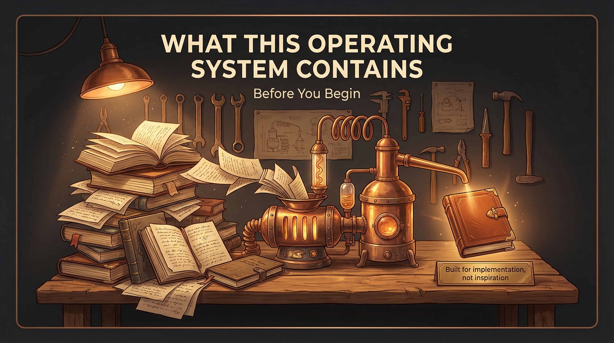
How to Use This Blueprint
Come with an open mind and an open heart. You will encounter neuroscience, psychology, and some concepts that might feel unfamiliar. Some will click immediately. Others might take time. If you feel resistance, that is usually a signal you are approaching growth.
Protect your attention. Turn off notifications. Put your phone in another room. Use an app blocker. One distraction, one scroll through TikTok, can derail your entire session. The world's most talented engineers designed those apps to capture your attention. Fighting them with willpower alone is a losing battle.
Do the exercises. Information without implementation is just sophisticated procrastination. I have kept everything ADHD-friendly: short, quick, nothing overwhelming. But you still have to do the work. Reading this and nodding along changes nothing. Implementing it changes everything.
Support your biology. Your brain runs on sleep, movement, and nutrition. During this program, try to sleep eight hours. Skip the processed foods and sugar. Get some movement, even just ten to twenty minutes of walking. Drink water. When you optimize your system, you get the most out of this transformation.
Use the community. The people who succeed are the ones who actively engage. I know you might feel resistance to posting, to introducing yourself, to asking questions. That resistance is exactly why you need to do it. Share your wins, even the tiny ones. Ask for advice. Show up. Before you start Week 1, introduce yourself in the community. Share one sentence about why you are here. This is your first act of showing up.
Never miss two days. Missing one day is fine. Life happens. Missing two days is the start of a new bad habit. That is where people disappear. The skill we are training is not perfection. It is coming back.
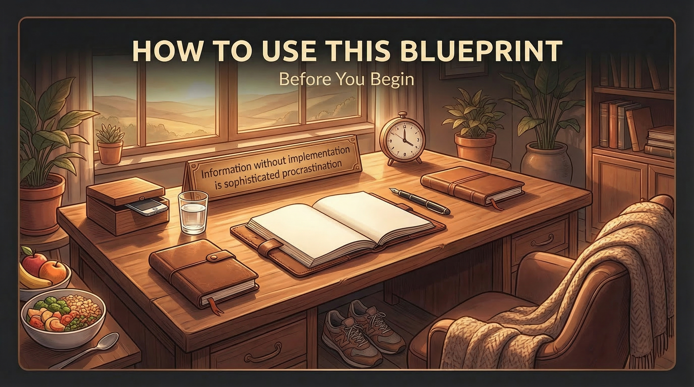
Two Ways to Experience This Blueprint
Path 1: Self-Guided. Use this blueprint alongside the free ADHD Harmony community. Follow the program at your own pace, post your progress, and engage with others on the same journey. Everything you need to transform is in your hands right now.
Path 2: Fully Guided. Join the live ADHD Harmony program for weekly coaching sessions with Jim, hot seat coaching where your specific situation gets addressed, Q&A calls, and body-doubling sessions. You also get Harmony AI, your personal coach that learns your patterns, adapts your exercises, tracks your progress, and catches you when you slip. Like having a coach in your pocket 24/7.
The blueprint is the map. The program is the guide walking beside you, making sure you never get lost. Message Jim Ebbelaar directly in Skool for more information. The link is below on every page.
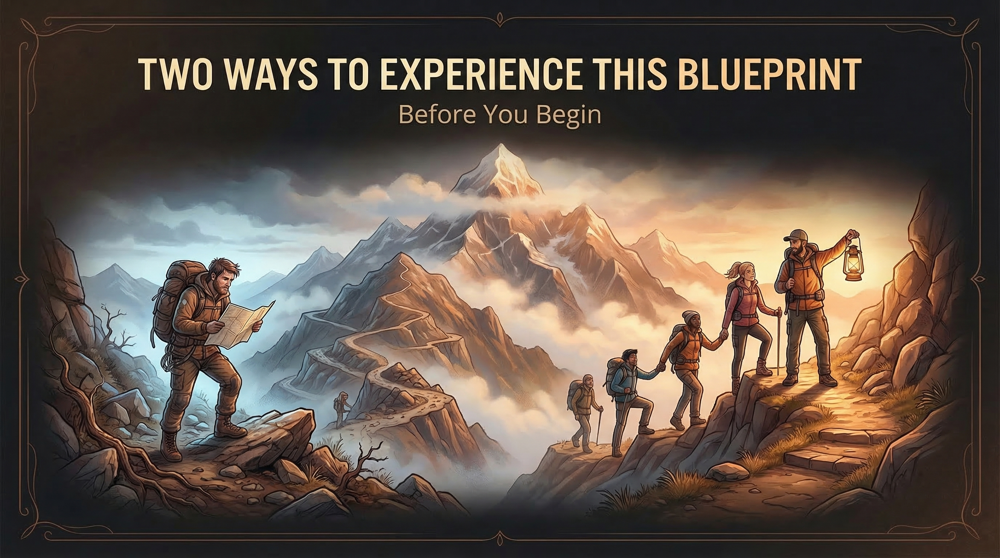
The Real Promise
I cannot promise you transformation, because in the end, you have to do the work. But what I can promise is this: I did my absolute best to synthesize everything I have personally learned and used to get to where I am today. Everything that helped me go from scattered, burnt out, and self-destructive to running an award-winning agency while actually living a healthy life.
The goal is not to fix you. You are not broken. You are about to discover why. Give me six weeks. I will give you a new operating system.
Let us begin.
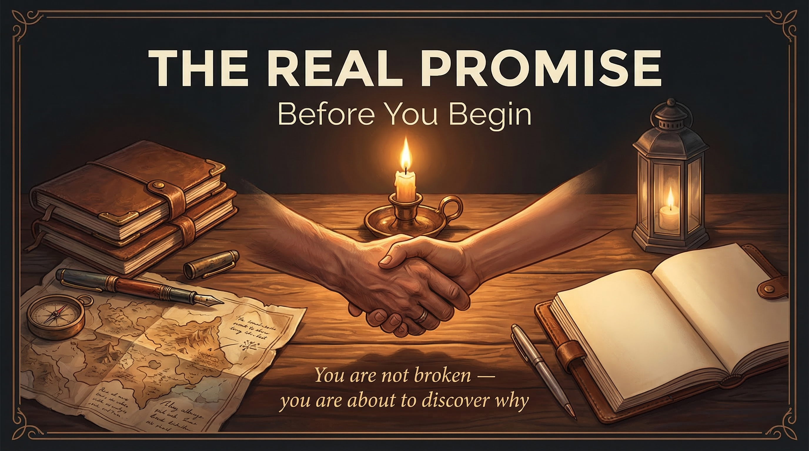
A Note From Jim: My Story
I want to share why this program exists and why I believe so deeply in its principles.
I was not diagnosed with ADHD until I was twenty-four years old. For most of my life, I had no idea why I was the way I was. I just knew I was different.
As a kid, I was always bored in school. I was not the hyperactive type. I was the dreamy type. Sitting still, following rules that made no sense to me, reading comprehension exercises about nothing that mattered. I could not do it. I remember refusing to learn to read an analog clock because I could read digital clocks perfectly well. Why waste time on something obsolete? I remember spelling the Dutch word for scissors, schaar, as "sgaar" because that is how it is actually pronounced. The rules felt arbitrary and pointless. I questioned anything that did not make sense to me.
I was not a troublemaker. I was just somewhere else, lost in my own head, dreaming about worlds that were more interesting than the classroom.
— Jim Ebbelaar
What I could do was play video games. Not just play, but optimize. In Pokémon, I figured out how to exploit the game mechanics to get all three starter Pokémon, something that required understanding systems at a level most players never bothered with. In RuneScape, I built pure characters, accounts optimized for player-versus-player combat by exploiting the stat system in ways the developers never intended. I was not interested in following the storyline. I was interested in finding the edges of the system and pushing past them.
This pattern of optimization, out-of-the-box thinking, and finding unconventional paths would define my entire life. But first, it would nearly destroy me.
The CITO Trauma
In the Netherlands, we have a test called the CITO that determines which level of secondary school you can attend. My brother scored high. I scored VMBO, nearly the lowest track, because my reading comprehension was abysmal. It was not that I could not understand things. I could talk, reason, create, and strategize better than most kids my age. But I could not read a paragraph and answer questions about it. My mind was elsewhere.
That test result became a core wound. I felt stupid, even though somewhere deep down I knew I was not. That contradiction, knowing I had capacity but being labeled as less-than, shaped everything that followed.
— Jim Ebbelaar
I ended up at a school where I barely had to try. So I did not. I became the class clown, hiding my insecurity behind humor. I hung out with the wrong crowd, smoked joints, and coasted through with minimal effort. If I did not try, I could not fail. If I played the clown, no one would see the scared kid underneath.
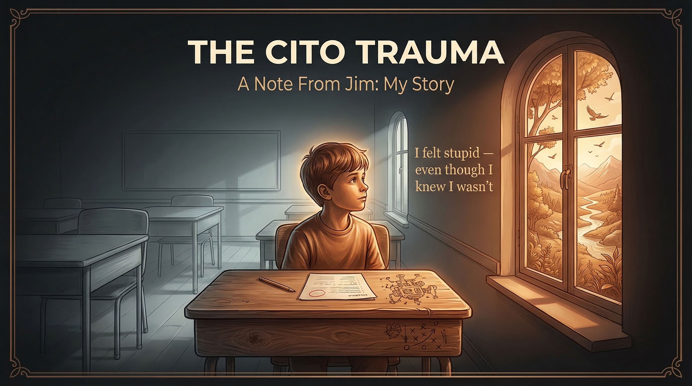
The Moment Everything Clicked
Everything changed when I discovered communities. Online gaming groups gave me a sense of belonging for the first time. Through those communities, I discovered graphic design. At fifteen, I was making YouTube banners and logos for gaming clans and earning my first real money online.
After a false start in creative media and then switching to software development, I spent two years watching Breaking Bad and Game of Thrones in class, doing absolutely nothing productive. Then came a school assignment: my team had to build an ordering system for the Turkish pizza place where I worked as a delivery driver. We built it from scratch. The day it went live, orders started coming through immediately. Something I had built. Something that worked. Something that made an impact in the real world.
I remember walking through school that day with a cigarette in my hand, so lost in the system in my head that I forgot where I was. For the first time, I had found something where I could pour all my energy and actually create impact. That was the moment the switch flipped.
— Jim Ebbelaar
Shortly after, I won my first hackathon, building a drone with sensors to detect soil pollution for a Dutch water company. A working prototype in three days. I discovered I could present, think outside the box, build things, and win. At eighteen, I registered my first business.
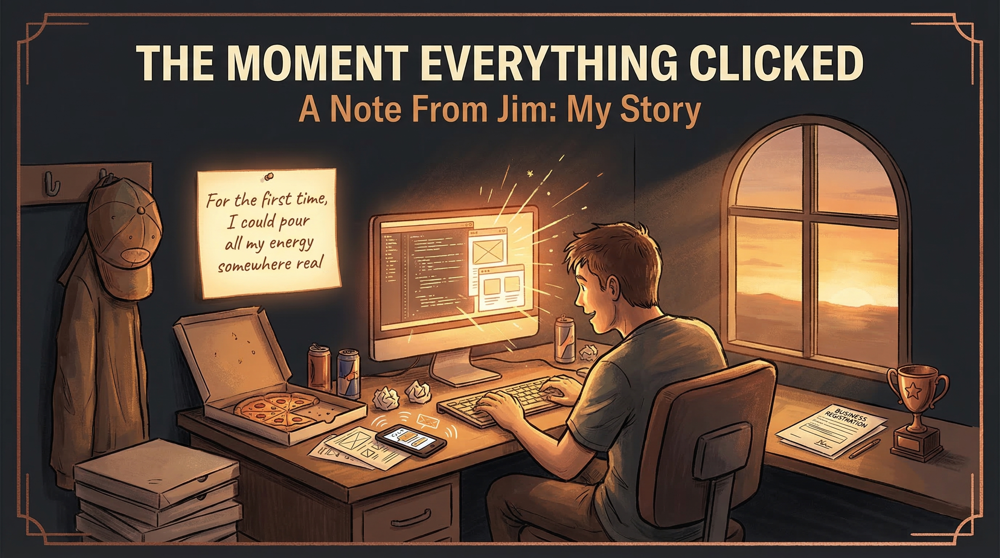
Success, Sabotage, and Burnout
What followed was a decade of chasing, building, winning, and then destroying everything I had created. After experimenting with at least ten different business models, I built a women's fashion e-commerce brand. It grew to sixty thousand Instagram followers and generated over a million euros in revenue. Finally, external validation. Stripe notifications, follower counts, dopamine hits on demand.
But women's handbags were not my passion. When regulations changed and the business required inventory and logistics, I fell apart. I had to let it go, and letting go took me two years of mourning. I did not understand why at the time. Later, I realized: that business was proof of my worth. Letting it go meant letting go of the only evidence I had that I was not broken.
Then came the dark period. I lived for weekends, partying, festivals, drugs. During the week, I was just waiting for the next escape. I had no idea what I wanted. I kept starting new things, getting excited, and then not following through.
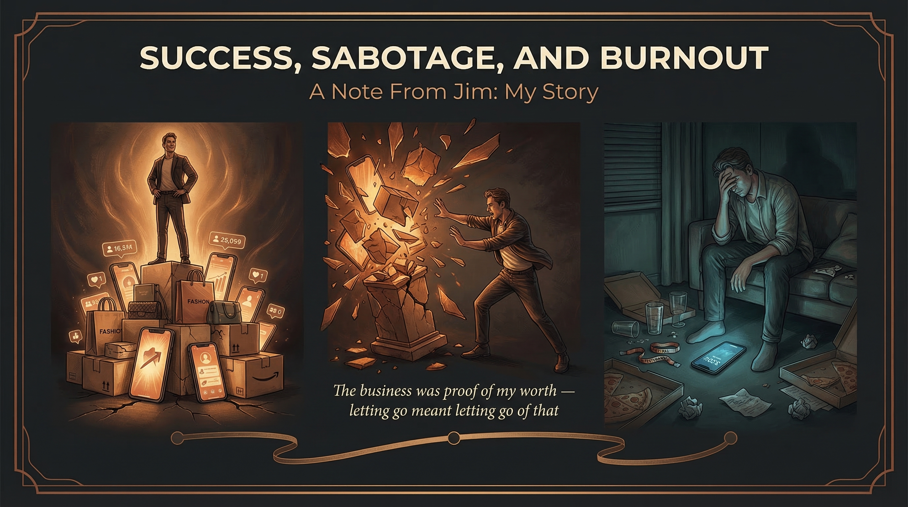
The Diagnosis
During the COVID lockdowns, I started doing a lot of reflection. I began meditating, exploring mindfulness, and eventually tried psilocybin mushrooms. During that experience, I received a clear message: your mind is too busy. Too busy. Too busy.
I wrote it down. After the experience ended, I went to my doctor. I got tested. And at twenty-four years old, I finally had an answer: ADHD.
The diagnosis helped at first. I started Ritalin, and suddenly I could focus. I enrolled in a consulting course and committed to niching down: real estate websites. For a while, it worked. But the medication that gave me focus took everything else. I became isolated, obsessive, perfectionistic. I rebuilt my own website twenty times in a single year because I was terrified to go public. The medication let me grind, but it disconnected me from my emotions, my relationships, my health. I burned out. Hard.
There were nights when my girlfriend came home at 3 AM from a night out, and I was still at my desk, alone, working on yet another rebrand that no one would ever see. The Ritalin let me focus, but I had lost the plot completely.
— Jim Ebbelaar
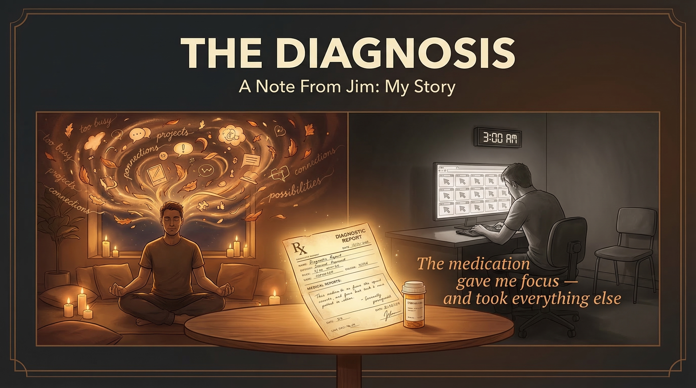
The Healing
What followed was the most important journey of my life. It was not just one thing. It was a combination of everything working together. Inner work like meditation and processing old patterns. But equally important: learning about habit systems, nervous system regulation, biological optimization, environment design, and building structures that actually worked with my brain. The spiritual side mattered, but so did the practical science. It was the integration of both that finally created lasting change.
I started to understand the patterns that had been running my life. I discovered that my default state was not good enough. I had a good childhood. Both my parents come from farming families, hardworking people who did their best. I was well taken care of, and I am grateful for the values they instilled in me. My parents did eventually separate, and while I was never neglected, there were times when the warmth felt a bit distant. This is not a criticism of my parents. It is simply part of my story.
What I do know is that growing up with undiagnosed ADHD meant I struggled with things that seemed easy for everyone else. My brother excelled at everything effortlessly. The CITO test confirmed what I already feared. Over time, these experiences quietly built a belief that I was not good enough. This belief had been sabotaging me for years. Every time I got close to real success, I would blow it up. My nervous system could not tolerate success because success did not match my identity.
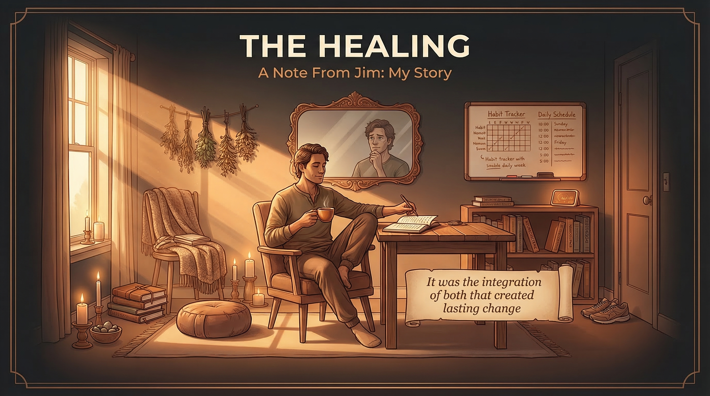
Building With My Brain
Eventually, I made the decision to stop taking Ritalin. For me, this was the right choice, but I want to be very clear: I am not a doctor. If you are considering any changes to your medication, please consult your healthcare provider first. Everyone's situation is different.
Here is my honest perspective on medication: it can be a valuable kickstart. Ritalin genuinely helped me in the beginning. But for me personally, I do not believe it was a sustainable long-term solution. I see medication as more of a bridge than a destination. It managed symptoms, but it did not teach me how to regulate my nervous system, how to build systems around my brain, or how to actually live well with ADHD. That work I had to do separately, and that is what ultimately made the difference.
Instead of medicating away my ADHD, I decided to build around it. Everything I could not do well, I outsourced. Everything that required my unique abilities, vision, strategy, presentation, transformation, I kept. I built systems that worked with my brain instead of against it. I hired people whose strengths complemented my weaknesses. I learned about nervous system regulation, habit architecture, and environment design.
Today, I run an award-winning digital agency, and I do it without medication. Because I discovered that for me, the real solution was not suppressing my brain. It was building a life that fit my brain. That is what ADHD Harmony is about. Not fixing you. Not making you neurotypical. Building a life where your brain is an asset, not a liability.
The lesson of my life is simple: I was not broken. I was just running the wrong operating system. The moment I stopped fighting my brain and started working with it, everything changed. That is what I want for you.
— Jim Ebbelaar
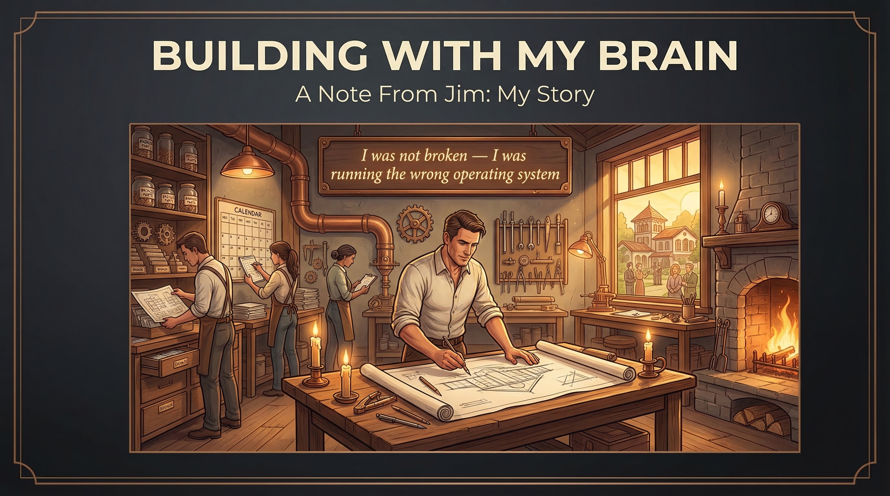
The Operating Manual You Never Received
Understanding the unique architecture of your ADHD brain.
Before we dive into the six-week program, you need to understand how your brain actually works. Not the oversimplified version. The real version. Because once you understand the mechanics, the strategies in this program stop being arbitrary advice and start being obvious solutions.
The ADHD Brain: A Ferrari with Bicycle Brakes
Dr. Edward Hallowell and Dr. John Ratey, who have spent decades researching ADHD, offer a reframe that changes everything: the ADHD brain is not deficient. It is different. They describe it as a Ferrari engine with bicycle brakes. The power is there. The speed is there. What is often missing is the braking system, the ability to regulate, to slow down, to direct all that energy where it needs to go.
ADHD is a terrible name for what is actually a remarkable brain. The problem is not attention deficit. It is attention dysregulation. We have too much attention, not too little.
— Dr. Edward Hallowell
Think about it: the same brain that cannot focus on a boring report for twenty minutes can hyperfocus on a video game for six hours. The same mind that forgets appointments can remember every detail of an interesting conversation from five years ago. The issue is not broken attention. It is that attention flows toward interest, not importance.
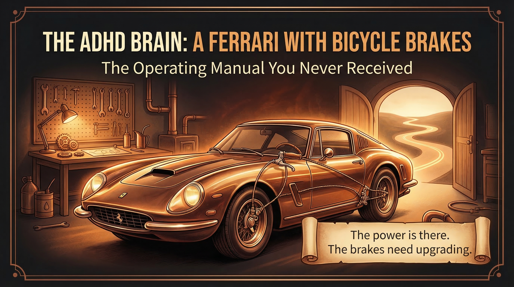
The Dopamine Difference
At the core of ADHD is a difference in dopamine regulation. Dopamine is not the pleasure chemical, as commonly believed. It is the motivation chemical, the neurotransmitter that makes things feel important, urgent, and worth pursuing.
The ADHD brain has lower baseline dopamine levels and fewer dopamine receptors in key areas. This means that activities which feel normally engaging to neurotypical brains often feel flat, boring, or impossible to focus on for us. Meanwhile, activities that spike dopamine, novelty, urgency, passion, crisis, can capture our attention with remarkable intensity.
This explains so much of the ADHD experience. Why you can play video games for six hours but cannot focus on a report for twenty minutes. Why a looming deadline suddenly makes you productive. Why you are constantly seeking novelty, new projects, new ideas. Your brain is looking for dopamine, and it will find it wherever it can.
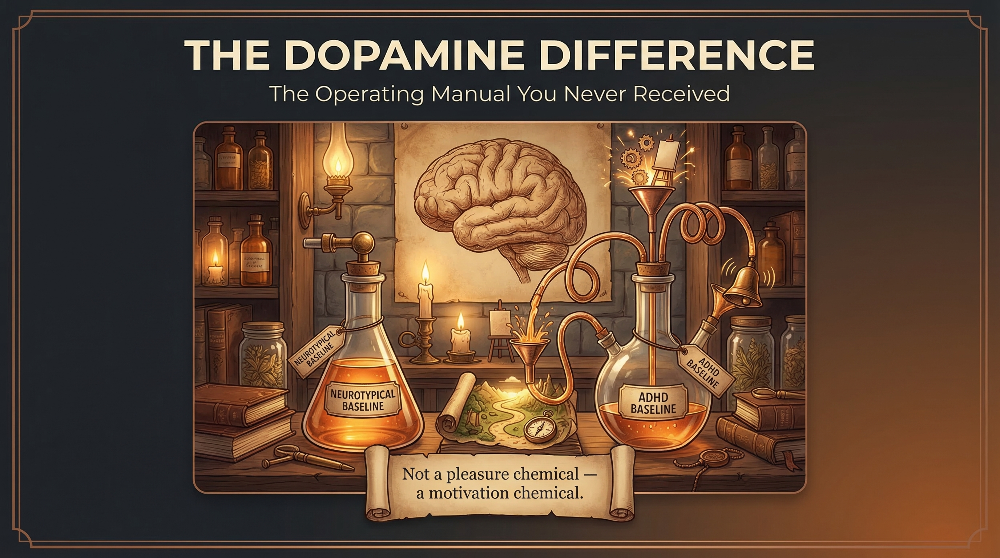
The Pleasure-Pain Balance
Dr. Anna Lembke's research in Dopamine Nation reveals something crucial: pleasure and pain are processed in the same part of the brain, and they work like a balance scale. When you experience pleasure, the brain tips toward pleasure, but then it automatically tips an equal amount toward pain to restore equilibrium. This is called homeostasis.
The relentless pursuit of pleasure leads to pain. The strategic use of pain leads to pleasure.
— Dr. Anna Lembke
For the ADHD brain, which is constantly seeking dopamine hits, this has profound implications. Every quick fix, the social media scroll, the sugar rush, the online shopping spree, creates a pleasure spike followed by a dopamine deficit. Over time, you need more stimulation just to feel normal. The baseline drops. This is how the modern world creates a state of chronic dopamine deficit.
The solution is not to eliminate pleasure. It is to reset the balance. Brief periods of discomfort, cold showers, exercise, fasting, boredom, tip the scale toward pain, which then triggers a natural rebound toward pleasure. Leaning into difficulty creates sustainable wellbeing in a way that chasing pleasure never can. This counterintuitive principle runs through every week of this program.
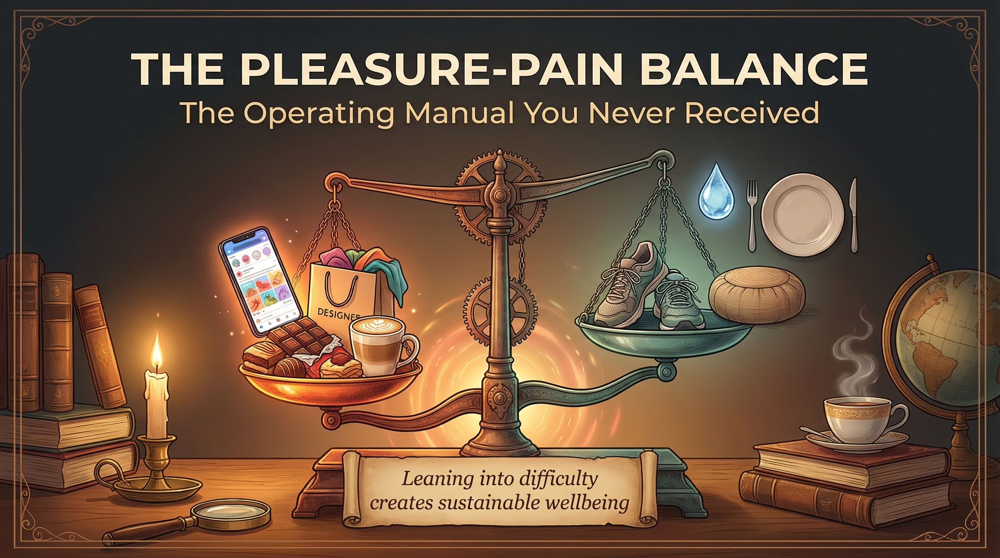
The Developmental View
Dr. Gabor Maté offers a complementary perspective in Scattered Minds. He argues that ADHD is not simply genetic. It develops in the interaction between a sensitive temperament and the environment, particularly the early attachment environment. Children who become ADHD adults are often born with heightened sensitivity. In the right environment, this sensitivity becomes a gift: intuition, creativity, empathy. But in stressful environments, this same sensitivity leads to chronic activation of the stress response.
The sensitive child who becomes an ADHD adult was not born with a deficit. They were born with a difference that, in the absence of the right conditions, became a struggle.
— Dr. Gabor Maté
This matters because it shifts the frame from disorder to adaptation. Your scattered attention is not a malfunction. It is a strategy your brain learned to cope with overwhelm. Understanding this allows self-compassion rather than self-criticism, which is itself the foundation for change.
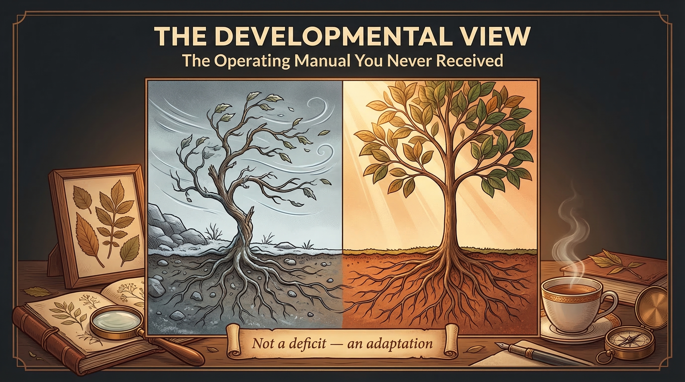
The Power of Connection
Hallowell and Ratey emphasize something often overlooked in ADHD treatment: the power of connection. They call it Vitamin Connect, the neurological benefits of positive human interaction. When we feel connected, seen, and understood, the brain releases oxytocin and other neurochemicals that improve focus, reduce anxiety, and enhance executive function. Isolation, on the other hand, exacerbates every ADHD symptom.
The best treatment for ADHD is not a pill. It is a person. Someone who believes in you, who sees your potential, who refuses to let you give up on yourself.
— Jim Ebbelaar
This is why community is built into this program. Not as an add-on, but as medicine.
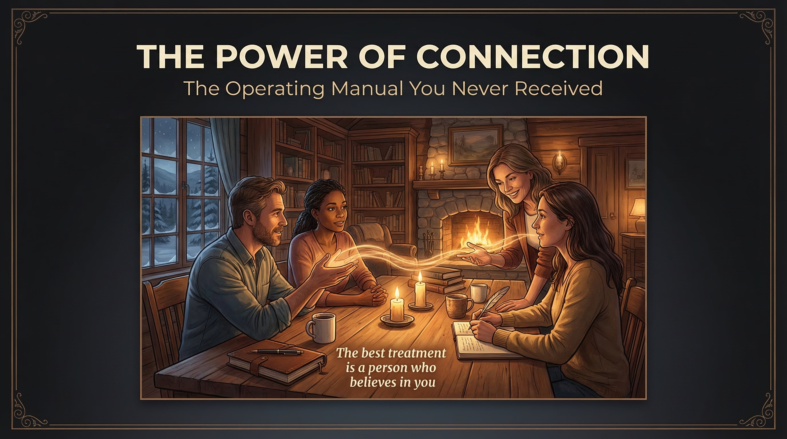
The Middle Way
This blueprint fuses cutting-edge neuroscience from experts like Dr. Andrew Huberman and Dr. Anna Lembke, timeless philosophy from thinkers like Naval Ravikant and Eckhart Tolle, developmental insights from Dr. Gabor Maté, practical wisdom from books like Psycho-Cybernetics and Atomic Habits, and brain-based systems designed specifically for how the ADHD mind operates.
There are two dominant approaches to self-improvement, and both have limitations. Hustle culture brings intensity, discipline, and pain tolerance, but it can burn the ADHD brain out through hyperfocus sprints that leave us depleted for days. The manifestation approach brings presence and acceptance, but it can become passive, mistaking peace for stagnation.
The ADHD Harmony approach is the middle way: intensity with regulation. We build strength without frying our nervous system. We push ourselves while honoring our limits. We pursue ambitious goals while maintaining the biological foundation that makes achievement sustainable.
I burned out twice before I learned this lesson: you can sprint, but you cannot sprint forever. The goal is not to work harder. It is to build a system that lets you work effectively for decades.
— Jim Ebbelaar
Understanding your brain is the first step. In the full ADHD Harmony program, Harmony AI generates a personalized profile based on your unique patterns, your dopamine triggers, your energy cycles, your emotional landscape, and shows you exactly where to focus first. Combined with live coaching where Jim translates the neuroscience into your specific daily life, you stop reading about your brain and start actually working with it.
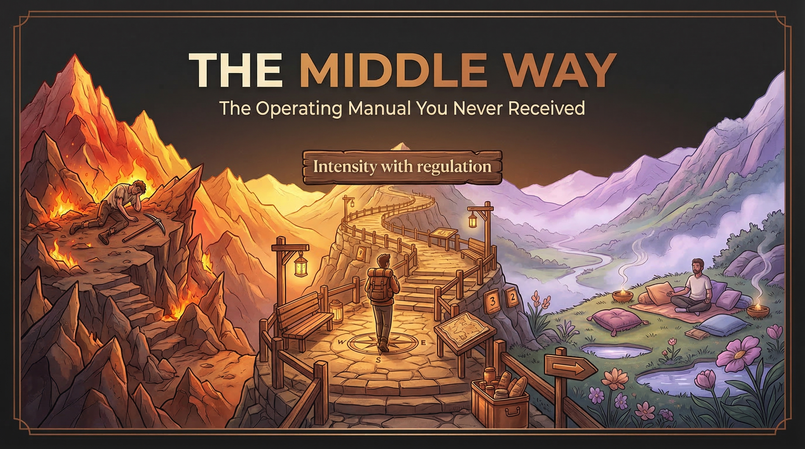
The 6 Principles of ADHD Harmony
Before we get into the weekly program, I want to give you the operating philosophy behind everything you are about to learn. These are not motivational posters. These are the six truths that hold the entire system together. Every exercise, every protocol, every week ties back to one or more of these principles.
I distilled these after years of reading, experimenting, failing, and rebuilding. They come from neuroscience, ancient wisdom, and lived experience. When you understand the principles, the tactics stop feeling random. They start feeling obvious.
Think of them as the source code. The weeks are the application. If you ever feel lost during the program, come back here. These will reorient you.
Principle 1: Inside-Out Transformation.
The world sells you external fixes. A better app. A new routine. The right supplement. But lasting change never starts with your environment. It starts with your identity. Your life will always reorganize itself to match your self-concept. Change the inner operating system first, and the outer results follow. Try to force the outer results without the inner shift, and you will keep snapping back to your old patterns. This principle runs through every single week.
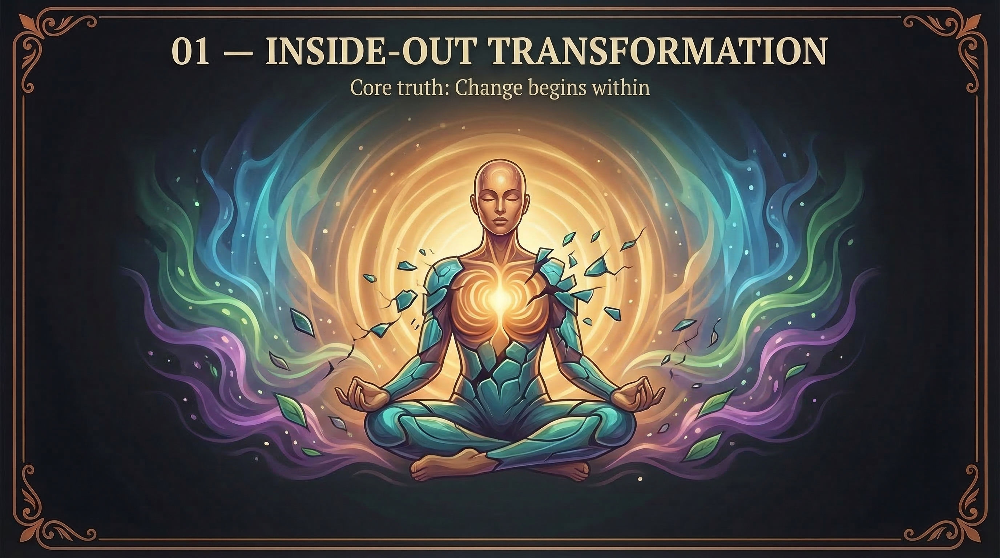
Principle 2: Thoughts Become Things.
Every thought produces a chemical reaction. That chemical becomes a feeling. That feeling drives your next thought. This loop creates your state of being, your personality, and ultimately your personal reality. This is not philosophy. It is neuroscience. For the ADHD brain, which runs hotter and faster than most, this loop can work for you or against you. The program teaches you to make it work for you.
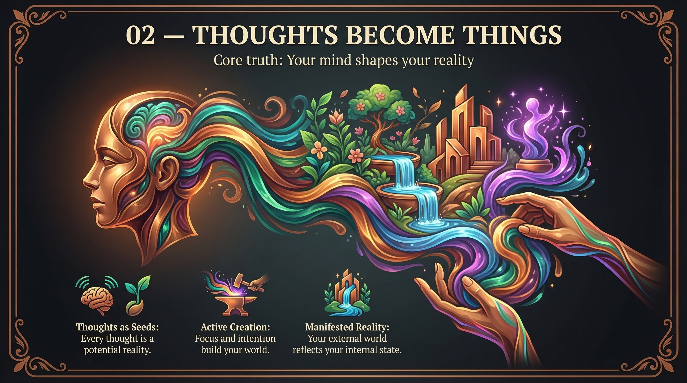
Principle 3: The Mirror Principle.
Your external reality is a feedback loop. The relationships you attract, the opportunities that show up, the obstacles you face. All mirrors. When you operate from fear, you get fearful outcomes. When you operate from wholeness, the world responds differently. This is not magical thinking. It is pattern recognition. Fix the signal, and you fix the reflection.
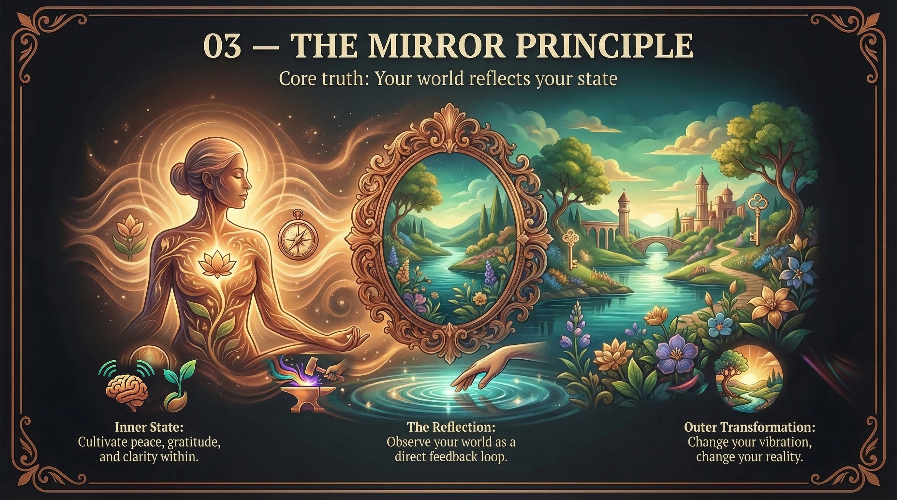
Principle 4: Clarity Over Complexity.
The ADHD brain does not struggle because it lacks ideas. It struggles because it has too many. Clarity is not about adding more direction. It is about cutting away everything that is not essential. One or two Big Rocks will always outperform twenty scattered goals. Addition requires subtraction. Energy cannot be created, only redirected. Every protocol in this program is designed to be as simple as possible, because complexity is where ADHD brains go to die.
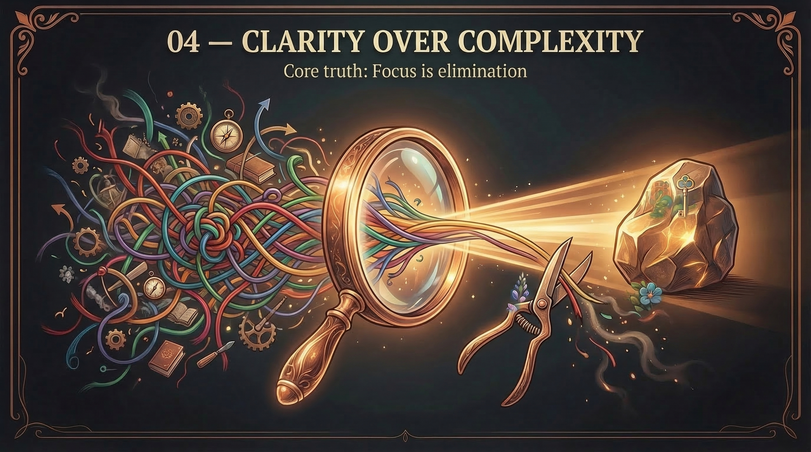
Principle 5: Consistency Over Perfection
You will miss days. You will fall off. That is not failure. That is being human with an ADHD brain. The only skill that matters is coming back. Never miss two days in a row. One missed day is a blip. Two missed days is the start of a new pattern. This program does not ask for perfection. It trains the comeback. If you can master that one skill, everything else becomes possible.
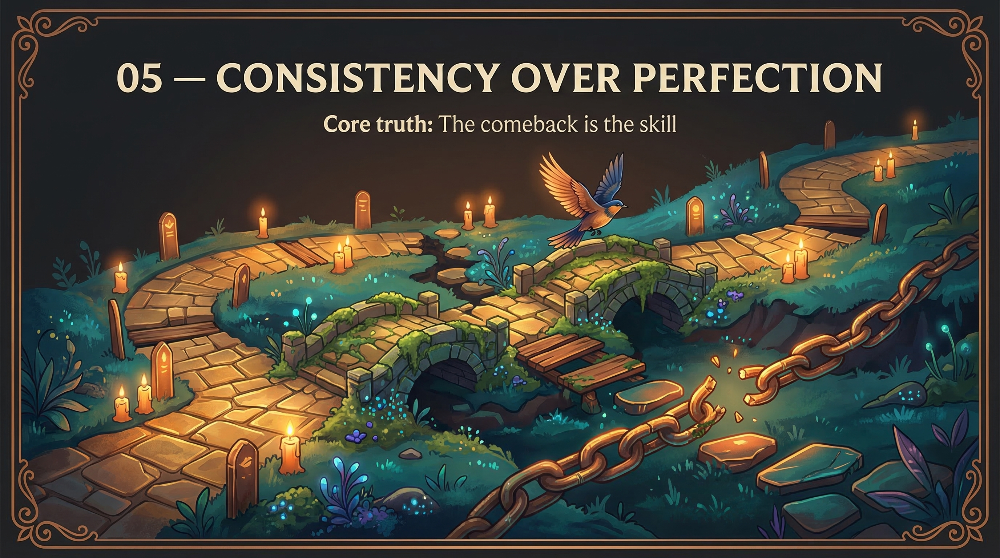
Principle 6: Evidence Over Belief
Affirmations without action are lies you tell yourself. Your ADHD brain has accumulated a lifetime of negative evidence: unfinished projects, broken promises, abandoned systems. You cannot out-affirm that. You can only out-evidence it. Every check-in you complete, every workout you show up for, every time you fall and get back up, that is a vote for your new identity. Stack enough votes, and the old story loses its grip.
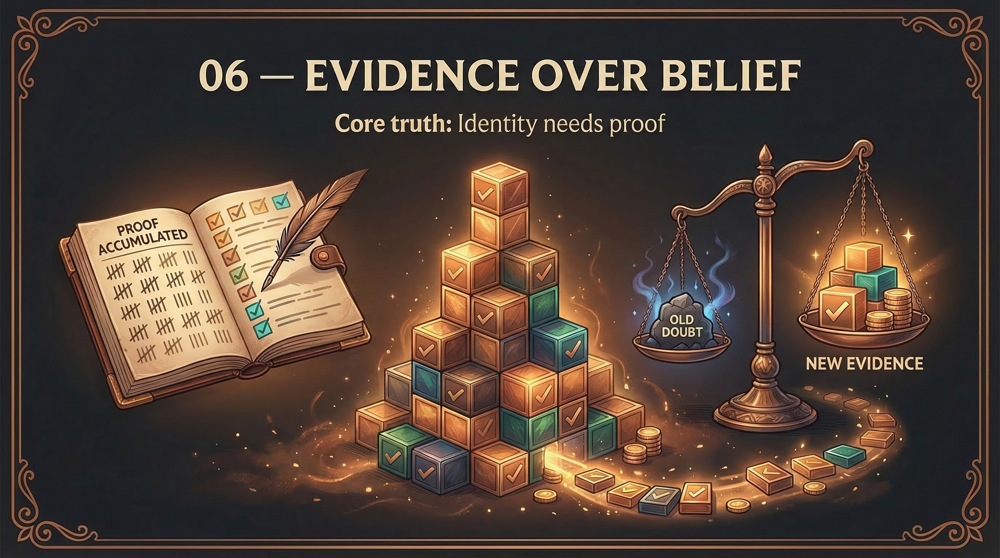
These six principles are not separate ideas. They are one system. Inside-out transformation tells you where change starts. Thoughts become things shows you the mechanism. The mirror principle reveals the feedback loop. Clarity over complexity keeps you focused. Consistency over perfection keeps you in the game. And evidence over belief makes the new identity stick.
Keep them close. You will see them everywhere once you start the weekly work.
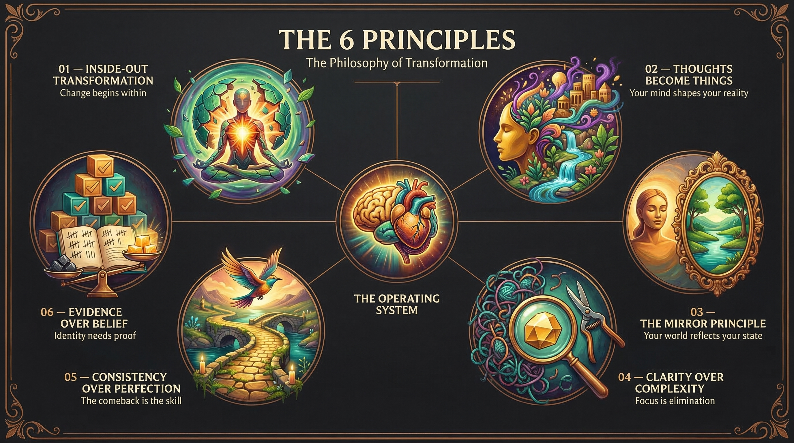
The 6-Week Roadmap

Here is where we are going. Six weeks. Six layers. Each one builds on the last. You cannot skip ahead, because the order is the system.
Most programs start with productivity hacks. We do not. We start with the foundation and work up. There is a reason for that. Every layer depends on the one beneath it. Try to be productive without regulating your biology and you burn out. Try to change your identity without mastering your emotions and the old patterns drag you back. The sequence is not random. It is architecture.
Week 1: Baseline and North Star. Find your direction. You get ruthlessly clear on where you are and where you are going. Two Big Rocks maximum. A Commitment Letter that turns intention into action. Clarity through subtraction, not addition.
Week 2: Biological Regulation. Calibrate your body. Sleep, movement, and nutrition become your power supply. You find your first domino, the one change that makes everything else easier. You learn why the first two weeks are the hardest and why it gets dramatically easier after that.
Week 3: Emotional Mastery. Turn intensity into fuel. You learn that thoughts become things, that you are not the voice in your head, and that emotions are data, not destiny. You build a three-minute comeback protocol for when things spiral. The goal is not to stop falling. It is to fall less deep and recover faster.
Week 4: Identity Transformation. Become who you really are. Inside-out change. Shedding survival masks. Rewriting your self-image. This is the deepest week, and for many people, the most powerful. You design your future self with enough detail that your brain can start rehearsing it.
Week 5: Productivity and Environment. Build systems for your brain. Not someone else's system. Yours. You find your purpose through Ikigai, learn to recognize The Mirage before it pulls you off course, and design your environment so the right choice becomes the default.
Week 6: Integration and The Long Game. Make it who you are. Never miss two days. The evidence stack. The comeback protocol. This week is about making sure everything you built in weeks one through five does not disappear the moment life gets hard. Because it will. And now you will be ready.
Each week has exercises. Each week has a community prompt. The exercises are short and ADHD-friendly. The community prompts are not optional but recommended. Posting is implementation. Implementation is transformation.
You do not need to see the whole staircase. You just need to take the first step.
Let us start with Week 1.
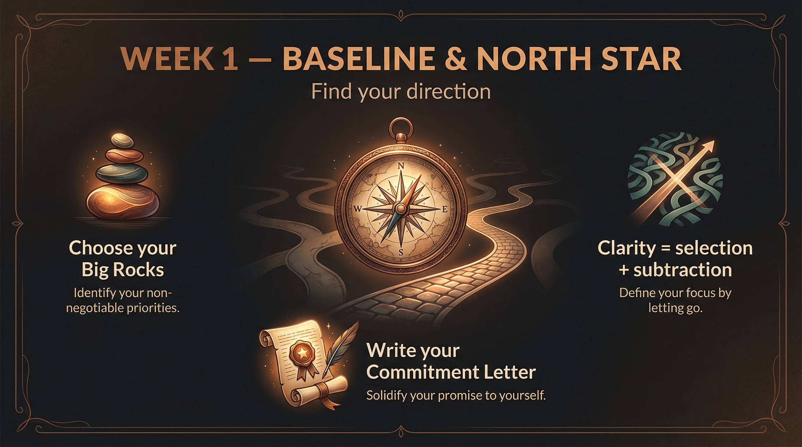
Week 1: Baseline and North Star
Establish where you are. Set where you are going.
This first week is your essential starting point: getting ruthlessly clear on what matters. Before you can build new systems, you must first understand why your current patterns exist and choose a direction worth following.
By the end of this week, you will have a clear baseline through your first weekly check-in, your one to two Big Rocks for the year ahead, a Commitment Letter with a relapse plan, and the friction-reducing foundations that set you up for the weeks ahead.
The ADHD Clarity Problem
The ADHD brain breaks on complexity. Not because it is incapable of handling complex things, quite the opposite. The ADHD brain sees too many possibilities, makes too many connections, gets excited about too many directions. What looks like distraction is often just an abundance of potential. But potential without focus is just chaos.
This is why the New Year buffet plate approach to goal-setting fails catastrophically for the ADHD mind. Twenty-four goals means twenty-four sources of guilt, twenty-four incomplete projects, twenty-four reasons to feel like a failure. Fewer priorities means more follow-through.
You can do anything, but not everything.
— David Allen
I learned this through painful repetition. E-commerce, then consulting, then automation, then crypto, then AI tools, then websites, then coaching. Every shiny object captured my attention. I started more projects than I can count. I finished almost none. Each abandoned effort felt like evidence that I was fundamentally broken. The truth was simpler: I was trying to do everything, so I accomplished nothing. The problem was not capacity. It was clarity.
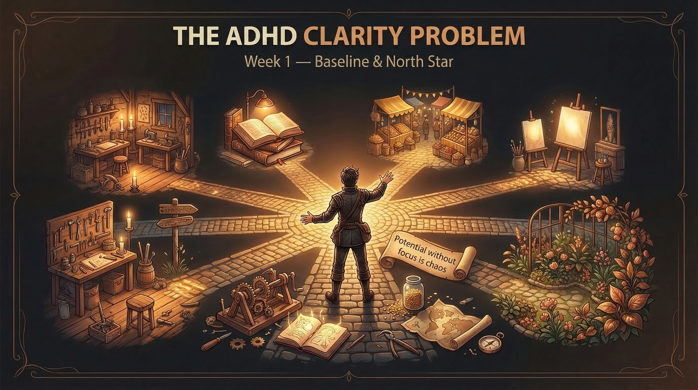
The Two Acts of Clarity
The first act of clarity is selection: choosing what matters most right now and giving yourself permission to let everything else wait. One or two Big Rocks will accomplish more than a dozen good intentions scattered across every area of life.
The second act of clarity is subtraction: recognizing that addition requires subtraction. If you add a new habit, you must remove something. Time, energy, attention. The laws of physics apply to your life as much as to the universe. Energy cannot be created, only redirected.
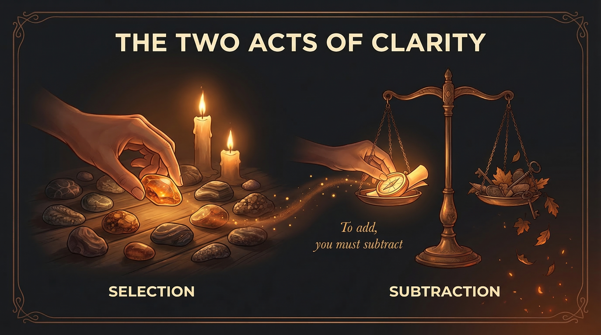
Picking Your Big Rocks
Work through these questions honestly. Do not rush. Let your answers surprise you.
What would need to happen by the end of this year for me to call it a success?
If your life was a movie, what would the audience be screaming at you to do?
What keeps coming up in your reflections, the theme that will not go away?
If you could only pick one to two things to focus on for the next six months, and everything else had to wait, what would they be?
Maximum two Big Rocks. Everything else goes to Later. Not abandoned, just not now. Examples:
I become physically stable through sleep and training.
I build one clear career or business focus.
I repair my relationship with myself.
I get my finances under control.
I complete my creative project.
The Anti-Goals Framework
Knowing what you are moving toward is powerful. But sometimes it is easier to know what you are running from. Pain avoidance can be more motivating than pleasure seeking, and for the ADHD brain, emotional intensity often drives action better than logic.
For each area of life, ask: what would I absolutely hate for my life to look like in five years? What would make me miserable? What am I terrified of becoming? Then write the opposite as a goal.
The extreme version: imagine yourself at age eighty-five, stuck with your worst current habit for the rest of your life. Feel how miserable that would be. Let that emotional pain fuel your commitment to change now.
I do not want to be eighty-five years old, still scrolling, still distracted, still wondering what I could have built if I had just focused. That image keeps me honest.
— Jim Ebbelaar
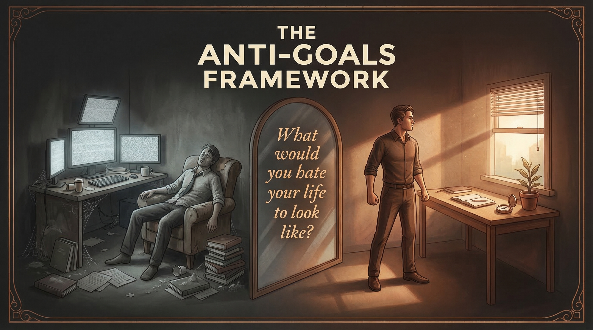
Your Commitment Letter
You now have clarity on what you want and what you do not want. The final step is making it real by turning intention into commitment. This is a contract with yourself. Not a wish list, a commitment.
I, [your name], am here because [why you started this program, be specific about your pain and your hope]. I commit to [showing up, not perfection, completing check-ins, doing the exercises, engaging with the community]. When it gets hard, and it will, I will [your specific plan: reach out to the community, return to my Big Rocks, do my bare minimum protocol, remember why I started]. I understand that transformation is not linear. I will fall. What matters is that I come back.
Post your Commitment Letter in the community, even a shortened version. External accountability multiplies internal resolve. There is something about saying it to real people that makes it stick differently than writing it alone.
Share your one or two Big Rocks. When others see yours, it helps them clarify theirs. And introduce yourself if you have not already. One sentence about why you are here.
This is not optional extra credit. This is implementation. Information without action is just sophisticated procrastination, and posting is action.
My Big Rocks: [your 1-2 Big Rocks]. I am here because [why you started, be specific about your pain and your hope]. I commit to [showing up, not perfection, completing check-ins, doing the exercises, engaging with the community]. When it gets hard, I will [your specific plan: reach out to the community, return to my Big Rocks, do my bare minimum protocol, remember why I started].
You are already ahead of where you were before you began. Do not let perfectionism steal your progress.
— Jim Ebbelaar
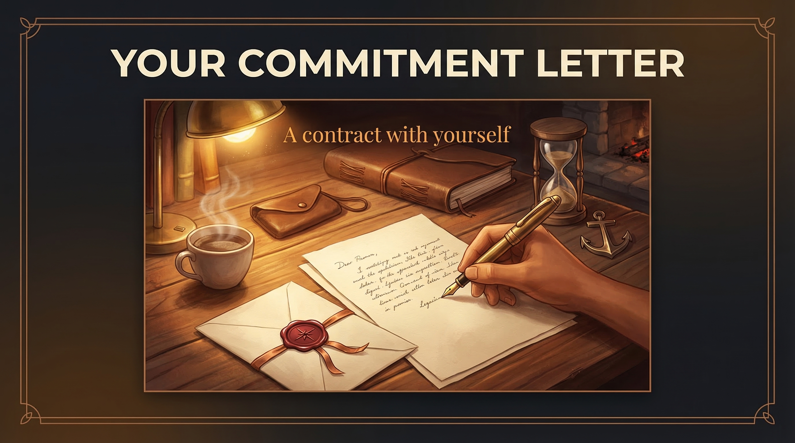
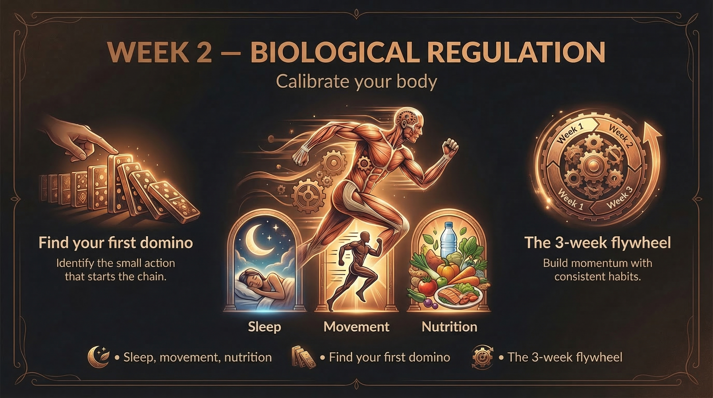
Week 2: Biological Regulation
Sleep. Movement. Nutrition. Nervous system, designed for ADHD brains.
Consistent energy is the bedrock of all personal and professional achievement. For the ADHD brain, which often experiences significant peaks and troughs, establishing a stable biological baseline is non-negotiable. Think of this week as calibrating your power supply. These protocols create the essential energy required for higher-level tasks like deep work, emotional regulation, and consistent productivity.
Find Your First Domino
Before we dive into protocols, let us address the most common mistake: trying to fix everything at once. There is an order to change that most people ignore. They want the sexy results, discipline, deep work, peak productivity, before they have established the boring foundations. This is like demanding athletic performance from a body that has not slept in three days.
The first domino must fall before domino nine. If you are waking up exhausted every day, sleep is your domino. If you have not moved your body in weeks, movement is your domino. If you are living on sugar crashes and caffeine, nutrition is your domino. Fix one thing. The others become easier. When in doubt, start with sleep, because it affects everything.
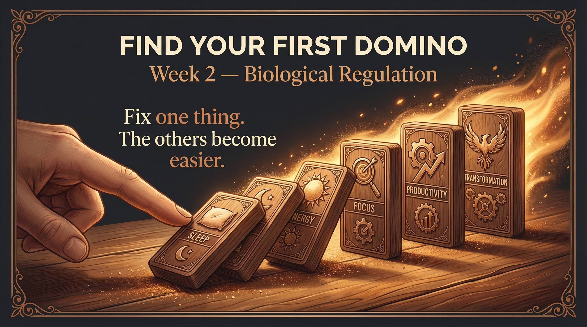
The Executive Function Trap
Here is the cruel irony of ADHD: you need executive function to start doing the things that improve executive function. You need motivation to exercise, but exercise is what creates motivation. You need energy to sleep well, but sleeping well is what creates energy. It is a chicken-and-egg problem that can feel impossible to escape.
Because of naturally lower baseline dopamine levels, starting something is genuinely harder for us. Whether it is starting a workout, making the decision to eat healthy, going to bed on time, or not grabbing your phone first thing in the morning, the very things that would help us most are the things that require the most effort to begin. The irony? While it is hardest for us, we also need it the most.
The Breakthrough: Why It Gets Easier
Understanding the dopamine balance from the previous chapter explains why starting is hard. But here is the good news: there is a predictable timeline that will save you.
During weeks one and two, this is hard. You are using willpower. You do not notice the benefits yet. You only have the downside of not having the quick dopamine hits. This is the grind phase. Then somewhere around weeks two and three, you start to feel some benefits. You gain some momentum. You start to realize: hey, maybe this is actually doable. By week three and beyond, the flywheel kicks in. Real momentum builds. The habit starts forming. After two to three weeks, it becomes who you are.
Train yourself to constantly remind yourself: I can go for the bad option right now, but it will literally be about five minutes of pleasure. If I just decide to go for the good option, the workout, the healthy meal, going to bed on time, that can give me days of momentum.
Take pain upfront. We are designed to seek quick comfort, especially with ADHD. But short-term relief almost always means long-term suffering. Do the hard thing first, and you will feel better after.
— Jim Ebbelaar
The 80/20 Rule
This entire program operates on the 80/20 principle. It is not about perfection. It is about progress over perfection. Eighty percent of the time, we try to go for the good option. Twenty percent of the time, we let it slip, and that is fine. We are humans. What matters is the overall pattern, not any single decision.
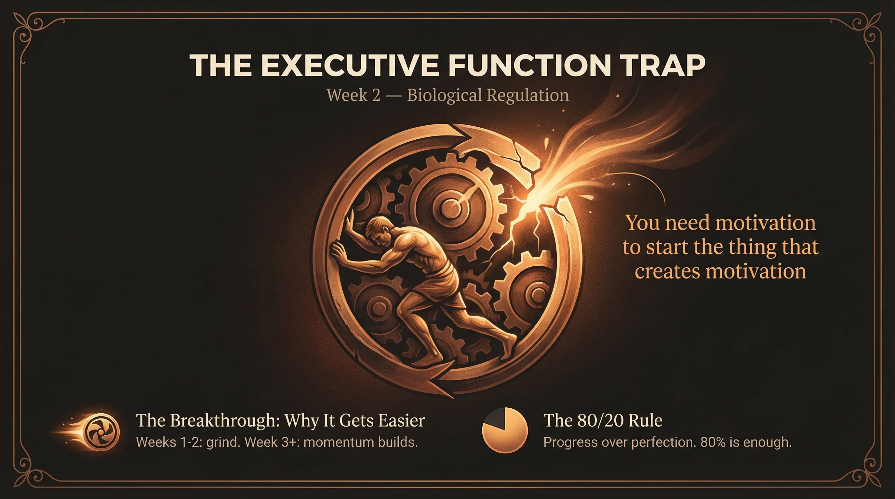
Sleep: The Foundation
Real transformation happens while you rest.
Sleep is the most important pillar. During sleep, many of the mechanisms we rely on, neuroplasticity, brain repair, emotional processing, memory consolidation, body repair, all happen. New neural pathways form. Emotions process. This is where change actually occurs.
The difference between hope and despair is a good night's sleep.
— Bryan Johnson
The Sleep Math
Laying in bed for eight hours is not getting eight hours of sleep. There is time to fall asleep. There are times you wake up during the night without even remembering it. On average, we are awake for about one to one and a half hours per night without knowing it. If you are in bed for eight hours, you probably have real sleep of just six to seven hours. Tracking changed everything for me. I could finally see the reality of my sleep, not the story I told myself about it.
The Caffeine Trap
Caffeine has a half-life of five to six hours. If you have a cup of coffee at 4 PM and go to bed at 10 PM, half the caffeine is still active in your system. You might think: I still fall asleep fine. But a reason you still fall asleep easily might be because you are chronically overtired. Even if you fall asleep with caffeine in your system, you do not enter REM and deep sleep properly. You get light sleep, but not the sleep that actually restores your brain and body.
The rule: No caffeine after lunch. This single change can create massive momentum for improving other behaviors.
Revenge Bedtime Procrastination
When you do not like your days, nights become your escape. During the day, you do stuff that drains you. At night, you are finally allowed to do the things you are excited about: reading, Netflix, gaming. So you stay up late. The next morning you are exhausted, and the cycle repeats. The solution is to build days worth waking up for. That is what the later weeks of this program help you find.
The Wind-Down Protocol
Start one hour before bed. Dim your lights to about fifty percent, because your brain needs darkness signals to produce melatonin. Put away screens. If you have trouble falling asleep, try a warm shower before bed. It raises your body temperature, and when you get into bed, your body naturally cools, helping you fall asleep faster. Instead of grabbing your phone, read a physical book. If you have racing thoughts, do a brain dump. Write down everything that is still on your mind in a physical journal. Empty the mental inbox.
Sleep Essentials
Same bedtime daily, with the 80/20 rule on weekends. Aim for seven to nine hours of actual sleep. Room temperature between fifteen to nineteen degrees Celsius. Complete darkness. No caffeine eight or more hours before bed. Last meal two to three hours before bed. Phone in a different room. A sixty-minute wind-down routine.
Optional Sleep Stack
For those who want to experiment: Magnesium L-Threonate is something I recommend to everyone, not just for sleep but as an essential supplement. L-Theanine helps calm the mind before bed. Inositol is worth adding if you tend to wake up during the night. It supports serotonin signaling and helps you stay asleep longer. Apigenin completes the stack. Take the combination thirty to sixty minutes before bed. If you do not struggle with sleep, do not use supplements. But during busy periods with racing thoughts, they can really help.
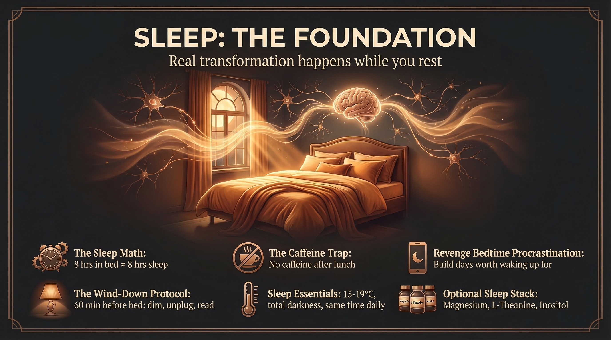
Movement Medicine
Your brain's natural stimulant.
With sleep as your foundation, movement becomes the multiplier. The science is clear: thirty minutes of exercise gives you two to four hours of enhanced focus afterward. Research shows a two hundred percent increase in BDNF (brain growth factor), effects comparable to low-dose ADHD medication, and a seventy percent improvement in executive function. Movement releases dopamine, norepinephrine, and GABA, your brain's natural pharmacy. Exercise is not optional. It is medicine.
Exercise is the single best thing you can do for your brain. It increases blood flow, promotes neuroplasticity, releases BDNF, and regulates dopamine and norepinephrine, exactly the neurotransmitters that are dysregulated in ADHD.
— Dr. John Ratey
Stop Thinking. Just Go.
The hardest part is the five minutes before starting. Putting on your shoes. Getting to the gym. Once you are there and you just start, it becomes easy, even fun, most of the time. Within five minutes of doing a couple of reps or putting in a couple of steps, you have already forgotten you did not want to go. The mantra: stop thinking. Just go.
The Foundation Protocol
For strength training, aim for two to four times per week, focusing on compound movements like squats, deadlifts, and presses. Even fifteen to twenty minutes provides benefits. For Zone 2 cardio, the optimal is one hundred fifty to one hundred eighty minutes per week, the intensity where you can still hold a conversation. Brisk walking counts. Morning walks provide maximum benefit. Any movement beats no movement.
Find What Lights You Up
The most important thing is finding something that actually makes movement fun for you. Rock climbing combines problem-solving with physical challenge. Martial arts builds focus and discipline. Dance brings music and social connection. Team sports add competition and accountability. Hyrox is one I have been getting into lately, because signing up for a race creates instant accountability, the training community gives you connection, and the registration fee means you actually show up. I play padel tennis too, and it feels more like gaming than working out. Sustainable beats optimal. Find your thing.
Making It Stick
Lay your clothes out the night before. Remove all friction. Use the five-minute rule: just start with five minutes. Track your progress visually with a calendar. Reward yourself immediately after. Find an accountability partner, or sign up for prepaid classes where you lose money if you do not show up.
The Self-Image Transformation
It is not just about the workout. It is about building your self-image, building confidence, doing hard things, and upgrading your identity. By starting to show up consistently, your body starts to change. Then your confidence starts to grow. Your self-image shifts. Whether you want to start a business, pursue a new job, or change your relationships, by proving to yourself that you can become consistent, you start working toward the version of you that can pursue anything.
If I can transform my body, I can transform my life. Every workout is proof you can do hard things. Physical change equals evidence that you can change.
— Jim Ebbelaar
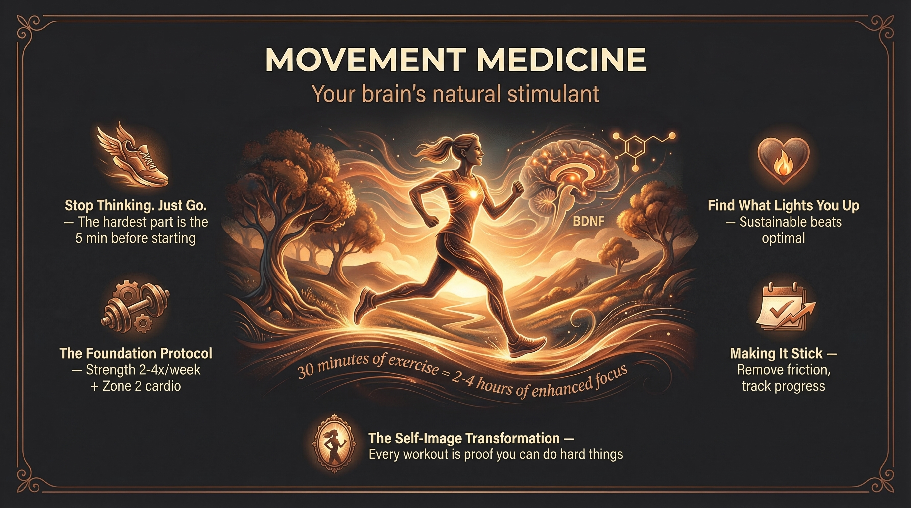
Nutrition: The Fuel
Engineering stable energy for the ADHD brain.
Sleep creates the foundation. Movement multiplies your energy. Nutrition determines what kind of fuel you are putting into the system. You can have the best sleep and exercise routine in the world, but if you are running on sugar crashes and processed food, you are sabotaging everything else.
The Hijack
Food factories are designed to create bliss points, the exact combination of sugar, salt, and fat that makes food irresistible. In the 1800s, humans consumed about two pounds of sugar per year. Now it is one hundred fifty pounds. Blood sugar crashes cause seventy percent less prefrontal activity, meaning seventy percent less of the brain region responsible for focus, planning, and impulse control, exactly the areas already challenged by ADHD. Proper nutrition can reduce ADHD symptoms by thirty to fifty percent.
The Morning Protocol
Start with one liter of water with electrolytes. Most of us do not get enough salt from pure electrolytes. You get fully hydrated and have way less cravings. Many times we think we are hungry when we are actually just dehydrated. Get around thirty grams of protein in the morning: eggs, meat, fish, greek yogurt, whatever works for you. Add healthy fats like avocado, nuts, and eggs. Minimize quick carbs by skipping the cereals, white bread, and processed sugars.
If you do not feel like eating in the morning, do not force it. Fasting works for some, increasing BDNF and focus. For women, be aware that fasting can have negative hormonal effects, so research what works for your body.
Caffeine Strategy
Wait sixty to ninety minutes after waking before your first coffee. Your natural waking system, cortisol and other chemicals, gets interrupted by caffeine. Let your body wake up naturally first. The afternoon crash becomes way less severe. Stop caffeine eight to twelve hours before bed. Have it after food when possible to protect your gut.
Core Supplements
Based on the science and longevity research, I recommend these to everyone. Omega-3 at two to three grams is especially important for ADHD: brain function, inflammation, mood, focus. Magnesium at four hundred to six hundred milligrams supports over three hundred body processes. Creatine at five grams is proven to optimize brain power, muscle strength, recovery, and energy. Vitamin D3 at two thousand to five thousand IU supports mood, immune function, energy, and bone health. Do not take these dosages at face value. If you decide to go for supplements, research the right dosages for your situation.
Managing Cravings
When cravings hit, try this sequence. First, drink a glass of water. Then have a protein snack. Then go for a five-minute walk. If you are still hungry after twenty minutes, eat mindfully. Many times after doing this, the cravings are already gone.
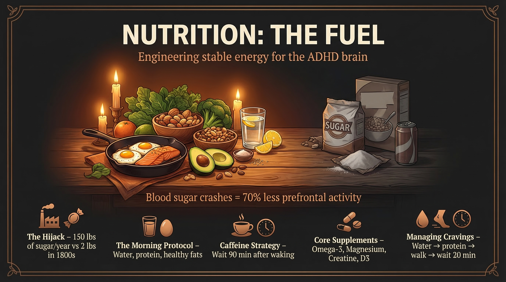
Tools and Systems
The external brain your ADHD needs.
Knowing what to do is not the problem. Doing it consistently is. This is where ADHD brains need external systems. Willpower is not the answer. It might work for the first week or two because you can force it, but in the end it is about reducing friction and making the right choice the default.
The Atomic Habits Framework
Make it obvious: Put your gym clothes by the bed, keep water visible, place supplements next to your coffee, put your phone in another room.
Make it attractive: Stack habits with enjoyment. Podcast plus walk. Reward yourself after.
Make it easy: Use the two-minute rule: just put on shoes, just start.
Make it satisfying: Use a visual streak. Never miss twice. Celebrate the small wins.
Habit stacking is particularly powerful: chain habits together so they flow automatically. Wake, then one liter of water, then five minutes of movement, then deep work. Attach new habits to existing anchors. Write the stack on your mirror. Externalize everything.
Tracking: The Game-Changer
I recommend everyone get a tracker for at least a specific period. What to track: HRV (Heart Rate Variability) is basically a score for how regulated your nervous system is. Track strain to see if you pushed enough. Track recovery to know whether to go hard or rest. Track sleep quality, not just duration. Data removes guesswork. Your body is already talking. Tracking helps you hear it.
Environment Design
When things are in their place, when you know where your gym clothes are, when you do not have to search through closets, everything becomes easier. Your phone charges in another room. Your gym bag is by the door. Healthy food is at eye level. Supplements are next to your coffee. Make the right choice the path of least resistance.
You do not rise to the level of your goals. You fall to the level of your systems.
— James Clear
Share your First Domino in the community. What is the one thing you are fixing first: sleep, movement, or nutrition? Then at the end of this week, post one win, however small. Skipped caffeine after 2 PM? Got one extra hour of sleep? Walked for ten minutes? Post it. Small wins shared publicly become evidence that you are changing. And when someone else sees your win, it gives them permission to start small too.
My First Domino: [sleep, movement, or nutrition]. Why this one: [what makes this your leverage point]. My one win this week, however small: [what you did].
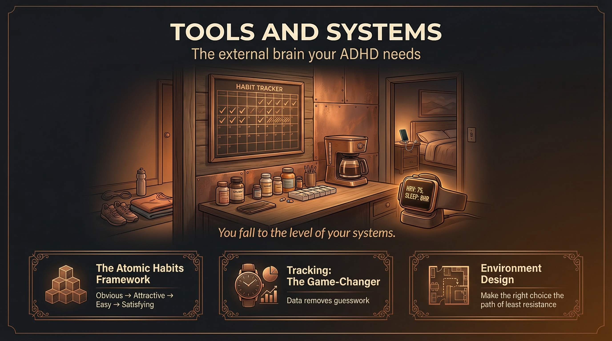
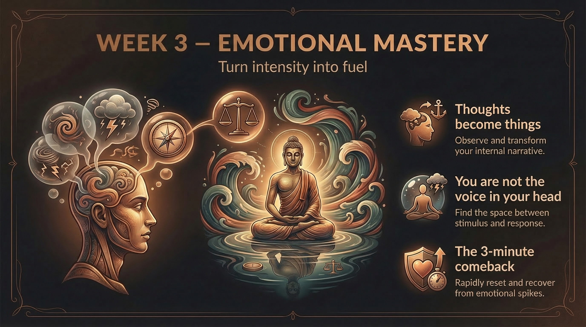
Week 3: Emotional Mastery
Master intense ADHD emotions so they fuel you instead of derail you.
Emotional intensity is a core trait of the ADHD nervous system. This can be a superpower, fueling passion and creativity. But it can also lead to Rejection Sensitive Dysphoria, chronic overwhelm, and intense frustration. This week is not about suppressing your emotions. It is about developing a comeback protocol, a reliable system to recover faster from stress and emotional spirals.
The ADHD Emotional Brain
Dr. Gabor Maté explains that emotional sensitivity is not a symptom of ADHD. It is central to what ADHD is. The same brain differences that create attention challenges also create heightened emotional responsiveness. You are not overly sensitive. You are appropriately sensitive for a brain that processes stimuli more intensely.
The ADHD mind is not one that lacks feelings. Quite the opposite. It is flooded with feelings that it struggles to contain and regulate.
— Dr. Gabor Maté
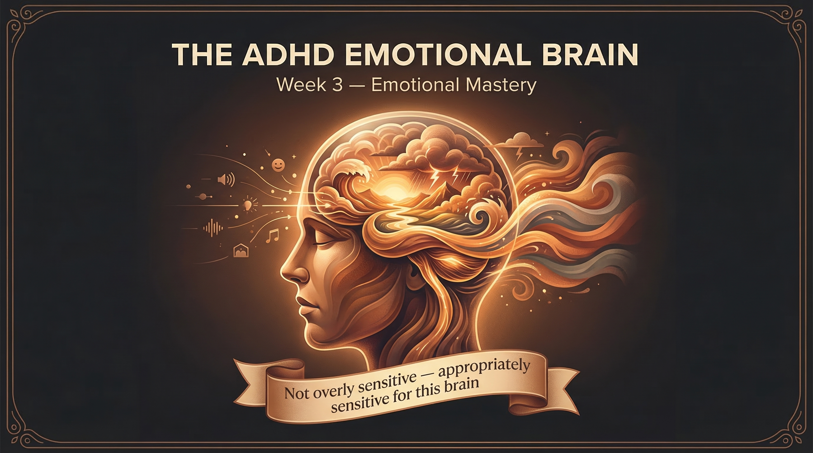
Thoughts Become Things
Every thought you think produces a chemical reaction in the brain. That chemical cascades through your body as a feeling. The feeling influences your next thought. This creates your state of being, the combination of how you think and how you feel at any given moment. Your state of being drives your personality. Your personality creates your personal reality. This is not metaphor. It is neuroscience.
Your thoughts can literally make you sick. The fundamental question is: can your thoughts make you well?
— Dr. Joe Dispenza
Here is where it gets interesting for the ADHD brain. You can become addicted to your own thoughts because stress hormones are addictive. If you can turn on the stress response by thought alone, replaying a difficult conversation, imagining future catastrophes, rehearsing your inadequacies, you can become chemically dependent on the very thoughts that make you miserable. This explains why negative thought patterns feel so sticky. It is not weakness. It is biochemistry.
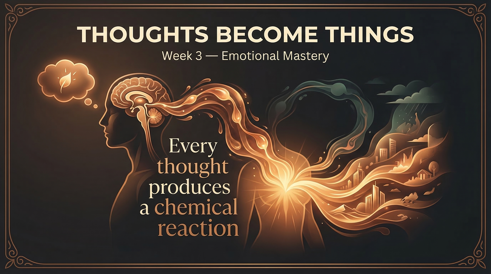
You Are Not the Voice in Your Head
Michael Singer describes this beautifully in The Untethered Soul. That constant stream of commentary, judgment, worry, and self-criticism is not you. It is just mental noise. You are the one who hears it. When you really start practicing this distinction, the mental chatter loses much of its power. You can observe a thought without believing it.
There is nothing more important to true growth than realizing that you are not the voice of the mind. You are the one who hears it.
— Michael Singer
This shift from identification to observation is the foundation of all real change. As long as you believe you are your thoughts, you are trapped by them. The moment you realize you are the awareness behind the thoughts, you gain the freedom to choose which thoughts to follow and which to release.
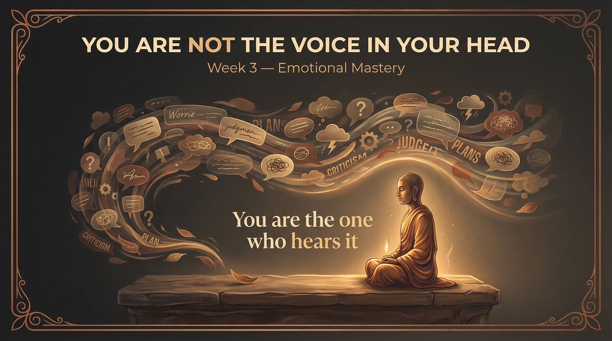
The Only Moment That Exists
The past is a memory. It does not exist anymore except in your mind. The future is a projection. It does not exist yet except in your imagination. The present moment is the only moment where change is actually possible. You cannot change a behavior in the past. You cannot change a behavior in the future. You can only make a different choice right now.
Eckhart Tolle's Power of Now is not philosophy. It is the operating manual for breaking free from the thought loops that keep the ADHD brain trapped between what if and what was.
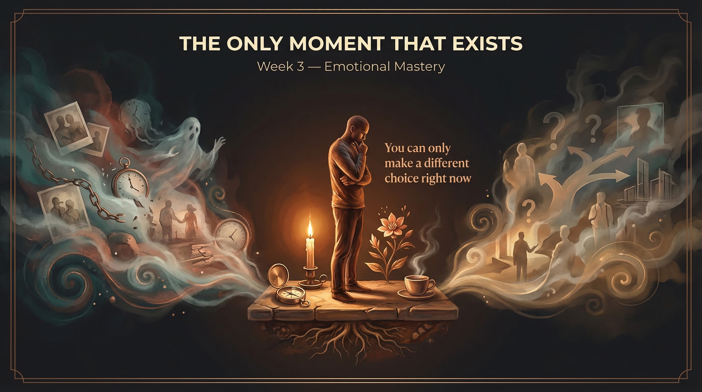
The Circle of Control
Being present is powerful, but present to what? Not everything deserves your attention.
Inner circle (what you can control): How you handle challenges. Your self-talk. Where you allocate energy. Your goals and priorities. Your thoughts and actions. Your boundaries.
Outer circle (what you cannot control): The past. Future outcomes. Other people's thoughts and actions. The news. The economy. What others think of you.
I barely read or watch any news. I decide what I focus on. The really important things, I still hear about. But I do not let media hijack my attention and emotions for things I cannot impact.
Where focus goes, energy flows.
— Tony Robbins
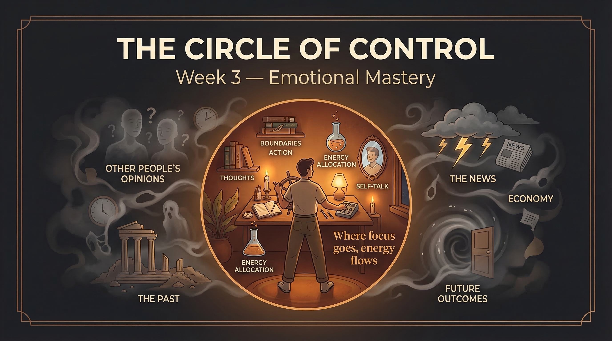
The Expectation Effect
What you focus on does not just consume your energy. It shapes your outcomes. David Robson's research provides grounded, evidence-backed proof of this phenomenon. The placebo effect is just the beginning. But the nocebo effect is equally powerful: when people expect negative outcomes, those outcomes often manifest. Expectations create neural patterns that filter perception and guide behavior. When you expect to fail, you notice evidence of impending failure and miss evidence of potential success.
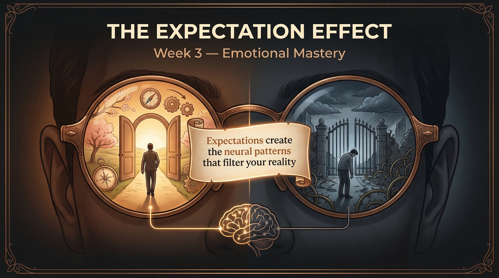
The Gratitude Gateway
If expectations shape experience, then shifting your emotional state is not just nice. It is strategic. Gratitude is the ultimate state of receiving. It signals to the body that something wonderful is happening or has happened. The physiological effects are measurable: the heart beats more coherently, oxytocin releases, and research shows practicing gratitude increases IgA, a key immune marker, by fifty percent in just four days.
But here is the deeper insight: do not just feel grateful for what you have. Feel grateful for things you have not received yet. This programs your autonomic nervous system for creation rather than lack.
We only accept, believe, and surrender to thoughts that are equal to our emotional state.
— Dr. Joe Dispenza
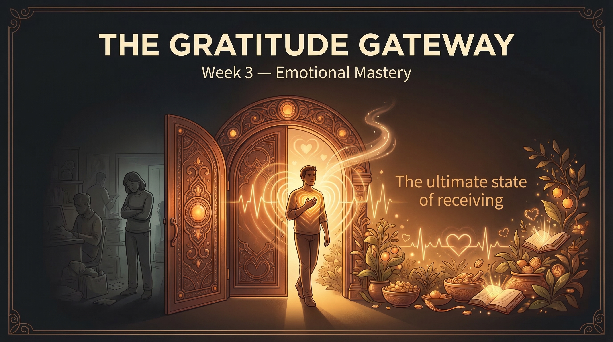
The Three-Minute Comeback Protocol
Understanding the mechanism is one thing. But what do you actually do when you are already spiraling? When the emotions have already hijacked you and theory feels useless?
Step 1: What am I feeling right now? Give the emotion a name. Overwhelm? Frustration? Shame? Anxiety? Naming it reduces its power.
Step 2: Where is this coming from? Identify the trigger. Was it a specific comment, a threatening situation, or a negative thought pattern? If you are stuck, drop into your body: where are you feeling this physically? Place your hand there. Breathe.
Step 3: What is the smallest next action? Define one tiny, physical step you can take to move forward. Take a walk around the block. Send the one-sentence message. Step outside for fresh air.
The goal is not to never spiral. It is to spiral less often, less deep, and for less time. Speed of recovery, not perfection of performance.
— Jim Ebbelaar
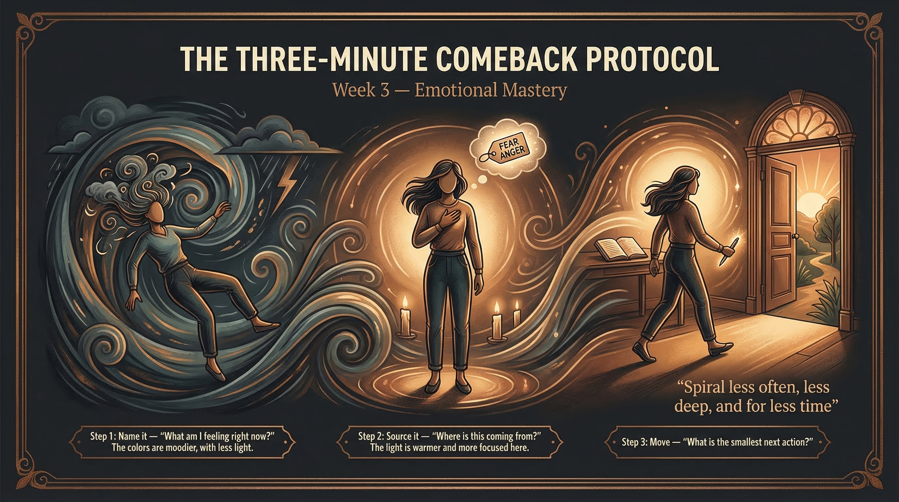
Overcoming Procrastination's Emotional Blocks
Procrastination is rarely laziness. It is most often a strategy of emotional avoidance. We delay tasks not because we cannot do them, but because we want to avoid the negative feelings we associate with them. The diagnosis is usually one of three problems.
Energy problem: You are depleted. The solution is rest, movement, or a dopamine reset.
Clarity problem: The task is too vague. Break it down until the next action is obvious.
Emotional problem: Fear, shame, or anxiety is attached to the task. Address the emotion directly.
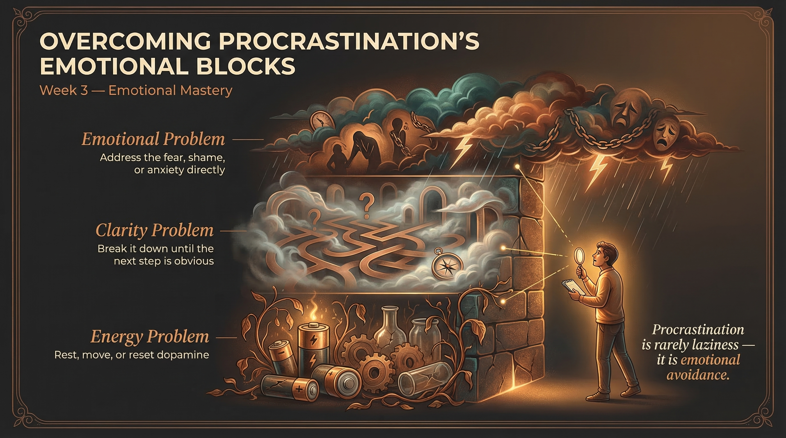
Mental Rehearsal: Training the Future
Research has proven something remarkable: the brain cannot fully distinguish between a real experience and one vividly imagined. People who mentally rehearsed playing piano scales for five days developed the same brain changes as those who physically practiced. If you can mentally rehearse how you want to respond in challenging situations, really feel the emotions, really inhabit the new behavior, you are literally rewiring your brain.
Before I do anything important, I run it in my mind first. I see the meeting going well, the conversation flowing, the outcome I want. By the time I actually do it, my brain has already practiced success.
— Jim Ebbelaar
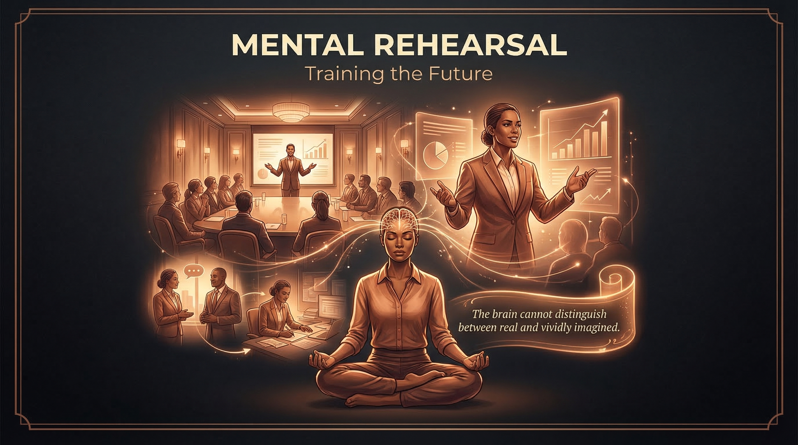
Self-Regulation: The Master Skill
Everything in this week points to one master skill: self-regulation. The ability to change your internal state in conditions that would normally trigger automatic responses. First, you practice it with eyes closed, in meditation. Then standing up. Then with eyes open. Then in challenging real-world situations. When you notice yourself falling out of coherence, pause, breathe, relax into the heart, return to the present moment. Do this enough times and it becomes automatic.
Being able to regulate your emotional state in the same environment, to think, act, and feel differently in the same conditions, that is regulation.
— Dr. Joe Dispenza
The goal is not to feel good all the time. The goal is to come back faster. To shorten the time between falling and rising. To make the comeback so practiced that it becomes your default response to difficulty.
Name one pattern you noticed this week and post it in the community. A thought loop, a trigger, an emotional habit. This is vulnerable. That is the point. You will find dozens of people who recognized the same pattern in themselves but never had the words for it. When you name it publicly, it loses power over you. And you give others permission to name theirs.
The pattern I noticed this week: [a thought loop, a trigger, or an emotional habit you recognized]. What changed when I named it: [how it felt to see it clearly, what shifted].
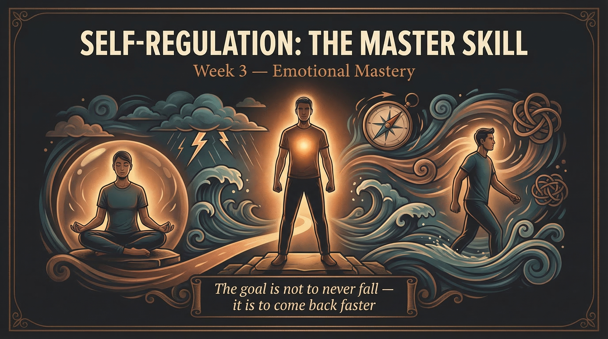
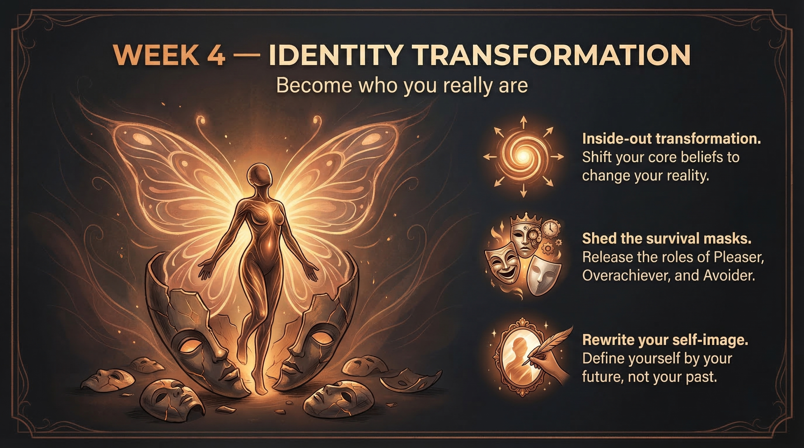
Week 4: Identity Transformation
Bridge the gap between who you are and who you are becoming.
This week, you will build the bridge between your current reality and your future aspirations. There is often a significant gap between the current self, defined by past patterns and limiting beliefs, and the future self, the version of you who is capable of achieving your most ambitious goals.
Inside-Out Transformation
We live in a culture obsessed with external solutions. New productivity apps. Better morning routines. The right supplements. The perfect system. We believe that if we can just find the right external change, the internal shift will follow. This approach has it exactly backwards.
The cycle that keeps most people stuck looks like this: the same thoughts lead to the same choices, which produce the same behaviors, which create the same experiences, which generate the same emotions, which reinforce the same thoughts. You cannot break this cycle by changing your circumstances. You can only break it by changing yourself first.
The body has become addicted to familiar emotional states, even negative ones. The discomfort of uncertainty feels worse than the familiarity of suffering.
— Dr. Joe Dispenza
This is why people can win the lottery and end up broke, or lose everything and rebuild to greater heights. External circumstances are temporary. Internal identity is persistent. Your life will always reorganize itself to match your self-concept.
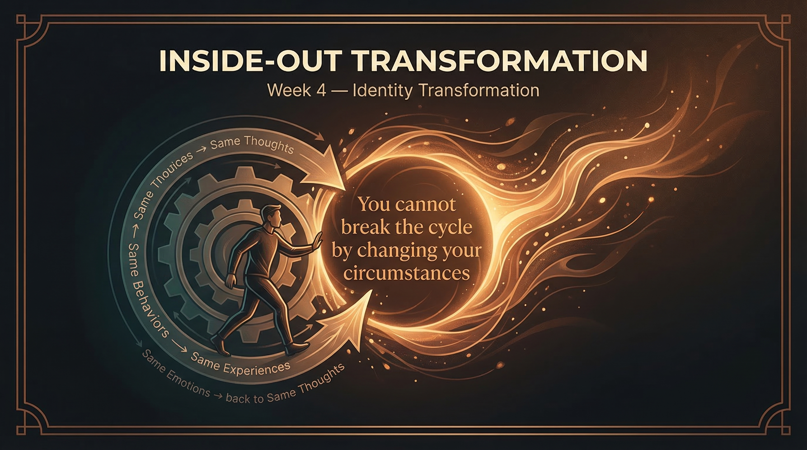
The Three Barriers to Change
Your body has been conditioned emotionally into the past. Every cell carries chemical memories of who you have been. When you try to change, the body sends signals demanding those familiar chemicals, even if they come from stress, anxiety, or self-doubt. Change feels physically uncomfortable because you are going through a kind of withdrawal.
Your environment, where every person, place, and thing has a neurological network triggering familiar responses. Your bedroom, your commute, your colleagues have all become cues that activate the old version of you. This is why travel can feel so liberating: you temporarily escape the environmental triggers that keep you stuck.
Time, the trap of being caught between the familiar past and the predictable future. We spend our days mentally rehearsing yesterday's problems and tomorrow's anxieties, leaving no space for the present moment where change actually lives.
The Self-Image Revolution
Maxwell Maltz, the plastic surgeon who wrote Psycho-Cybernetics, discovered something profound through his patients. He would perform successful surgeries, objectively improving someone's appearance, yet the patient would still see themselves as ugly. The surgery changed their face but not their self-image. And it was the self-image, not the face, that determined how they moved through the world.
Self-image sets the boundaries of individual accomplishment. It defines what you can and cannot do. Expand the self-image and you expand the area of the possible.
— Maxwell Maltz
The Survival Identity Map
Before you can build a new self-image, you need to understand the one you are currently operating from. We all develop survival strategies early in life, ways of being that protected us but may no longer serve us.
The Pleaser who is always nice learned that approval meant safety.
The Overachiever who is always useful learned that productivity meant love.
The Avoider who always says tomorrow learned that not trying meant not failing.
The Class Clown who makes everyone laugh learned that humor deflected judgment.
Maybe you recognize yourself in one of these. If you are anything like me, you have worn them all, just at different times. It started with the Class Clown, when I landed in VMBO and hid behind jokes. Then the Pleaser in my first relationships, bending myself into whatever shape I thought the other person needed. Then the Avoider, head in the sand, not even trying. And finally the Overachiever, the mask I still catch myself wearing today, the one that whispers: if you just do more, build more, achieve more, then you will finally be enough.
The difference now is not that the masks are gone. It is that I can see them. And seeing them is the first step to choosing something different.
Ask yourself: who did I become to stay safe? Then ask: who do I want to become to feel alive? The gap between these answers is your transformation roadmap.
— Jim Ebbelaar
The Self-Sabotage Pattern
As you begin this identity work, your old identity will fight back. And it will not fight fair. You have a good stretch, maybe a day, maybe a week. You are following your protocols, sleeping better, showing up differently. And then a voice appears. Not loud, but seductive. A whisper that says: you have done such a good job. You deserve a break. Just this once. And then the old patterns rush back in.
This is not laziness. This is your nervous system doing exactly what it is designed to do: returning you to your familiar state. Your body does not care if your familiar state is healthy or unhealthy. It only cares that it is familiar.
The body has been conditioned to a familiar emotional state. When you try to change, it sends every signal it can to pull you back, not because the old state was good, but because it was known.
— Dr. Joe Dispenza
If you recognize this pattern in yourself, know that it is not a character flaw. It is a survival program. And like all programs, it can be rewritten. That is what this week is about.
The Stories We Carry
Your survival identity did not just create behaviors. It created stories. Research suggests that fifty percent of the traumatic stories we tell ourselves are no longer the truth, if they ever were. We embellish to excuse ourselves from changing.
The shift is this: stop romancing your past. Start romancing your future. Stop believing in your past and start believing in what is possible. This is not denial. It is direction. The past informs you. The future transforms you.
The memory without the emotional charge is called wisdom. Now you no longer belong to the past. You are ready to create a new future.
— Dr. Joe Dispenza
The Mirror Principle
As you shift your internal stories, your external reality starts to shift too. Your life is a mirror. The relationships you attract, the opportunities that find you, the obstacles that appear are all reflections of your internal state. When you operate from fear, you make fearful decisions. When you operate from wholeness, you make confident decisions. You see opportunities where others see problems. You attract rather than chase.
When you are whole, it is hard to want. You can only want when you are in lack. The real goal is not the car, relationship, or health outcome. It is wholeness itself.
— Naval Ravikant
Finding Your Right Difficult
Hallowell and Ratey introduce a concept called the right difficult. The ADHD brain does not struggle with difficult tasks in general. It struggles with the wrong kind of difficult. Tasks that are boring, routine, and unrewarding feel impossible. Tasks that are challenging, novel, and meaningful can capture ADHD focus for hours. The goal is not to make everything easy. It is to find the challenges that energize rather than drain you.
Most people with ADHD have something they can do as well as or better than anyone else. The key is finding that something and building your life around it.
— Dr. Edward Hallowell
Your Life's Task
Robert Greene's research in Mastery reveals that your Life's Task often leaves clues early on, in what you were naturally drawn to before the world told you what was useful. When I read this book during my darkest period, I suddenly saw the pattern I had missed. The gaming was not wasted time. It taught me systems thinking and optimization. The e-commerce failure taught me marketing and customer psychology. The consulting work taught me how organizations function.
Mastery taught me that nothing in my life had been wasted. Every scattered interest, every failed project, every tangent, they were all puzzle pieces. The pattern was always there. I just could not see it until I looked.
— Jim Ebbelaar
Remembering Who You Are
Transformation is not about becoming someone new. It is about remembering who you were before the world told you who to be. This thread runs through every wisdom tradition humanity has ever produced. The message is always the same: you arrived whole. Life made you forget. The work is to remember.
Before the labels, before the survival masks, there was a version of you that was already complete. A kid who was curious without needing permission. Who was creative without calling it a skill. Who followed their interests without asking if they were useful. That version did not need to be fixed. They needed to be protected. And in most cases, they were not, not because anyone was cruel, but because the world simply was not built for the way their mind worked.
We are not here to become something we are not. We are here to remember what we have always been, underneath the conditioning, underneath the masks, underneath the stories we were told about who we should be.
— Jim Ebbelaar
Two Lenses for Self-Understanding
MBTI: How You Have Adapted
The Myers-Briggs Type Indicator maps your cognitive preferences across four dimensions. The important thing to understand: MBTI is not a fixed label. It is a snapshot of how you are currently operating, and that changes. My own MBTI type has shifted over the years. It captures the software you are currently running, the adaptation, not the essence.
For ADHD minds, MBTI is particularly useful for understanding your relationship with structure. If you are a strong Perceiver, rigid systems will always feel like a cage. You need flexibility baked into your operating system. If you are a strong Intuitive, you will naturally see big-picture connections but might struggle with sequential details.
Human Design: How You Were Built
If MBTI captures how you have adapted, Human Design claims to capture how you were designed to operate before any adaptation happened. Your chart is calculated from your birth data and stays the same for life. It gives you your type: Generator, Manifesting Generator, Projector, Manifestor, or Reflector, each with a fundamentally different strategy for making decisions, using energy, and navigating the world.
You might read your Human Design chart and feel an immediate recognition, a deep yes, that is how I have always felt but never had words for. That is the remembering. That is the signal underneath the noise.
You were not born wrong. You were born with a design. The suffering comes from living someone else's design instead of your own.
— Jim Ebbelaar
Why Use Both
Together, these tools create something neither can offer alone. MBTI shows you how life has shaped you. Human Design shows you the hardware you were born with. When you hold both together, you can see where your current behavior aligns with your design and where it does not. That gap is your transformation roadmap.
Identity-Based Change
James Clear distinguishes between three layers of behavior change: outcome-based (I want to lose weight), process-based (I will go to the gym three times a week), and identity-based (I am someone who takes care of my body). Most people work from outcome to identity. The most effective change works from identity to outcome.
The goal is not to read a book. It is to become a reader. Not to run a marathon, but to become a runner.
— James Clear
Every action you take is a vote for the type of person you wish to become. Remember the protocols from the previous weeks? Those are not just health habits. They are identity votes. Every time you follow your bare minimum, even on your worst day, you are casting a vote: I am someone who keeps promises to himself.
Designing Your Future Self
With all of this understanding in place, it is time to get specific. What limiting beliefs has your future self overcome? What new beliefs have replaced them? What does a typical day look like for this person? What does this person say no to? How does your future self handle the same triggers that derail your current self? How does your future self work with their MBTI preferences and Human Design?
Spend real time on this. Write it down. Be specific. The more vivid and detailed your vision, the more your brain can rehearse it. Remember: you are not inventing someone from nothing. You are designing the clearest expression of who you already are.
Somatic Breathwork Ceremony
This week, the full ADHD Harmony program includes a guided somatic breathwork ceremony, and it may be the most powerful experience in this entire journey. Breathwork bypasses the thinking mind. It forces you inward, into your body and emotions, instead of staying stuck in your head. What years of therapy can do, breathwork can unlock in a single session.
Here is how to prepare so you are ready. No heavy meal two to three hours before, ideally do it fasted. Minimal or no caffeine that day. Find a quiet, safe space where you can lie down without interruptions. Good headphones. Water nearby. Tissues, because you may cry. Clear schedule afterward to integrate. And set an intention before you begin: what survival identity are you ready to let go of? What part of your original self are you ready to remember?
Please note: if you are pregnant, have cardiovascular conditions, a history of seizures, high blood pressure, or major psychotic conditions, breathe at forty to fifty percent intensity and stop whenever needed.
Describe your future self in one paragraph and share it in the community. Be specific. Not vague aspirations. Paint the picture. What does a Tuesday morning look like? How do you feel when you wake up? What have you built? When others read your vision, it becomes more real for both of you. And when your future self feels real, your present self starts making different choices.
My Future Self: It is a Tuesday morning. [Describe what you see. How do you feel when you wake up? What does your morning look like? What have you built? Be specific, not vague.]
Week 5: Productivity and Environment
Systems that work with your brain, not against it.
If you have made it to week five, something remarkable has already happened. You are still here. In an ADHD program, where most people tap out around week two, you are showing up. That alone is worth celebrating.
This is not your typical productivity chapter. I am not going to hand you a color-coded calendar system and tell you to time-block your life into fifteen-minute segments. I am not going to pretend that discipline is the answer. What I have learned is that real productivity for the ADHD brain looks nothing like what the self-help world sells. It is about finding something that lights you up so much that working on it becomes natural. It is about designing systems that match your wiring. And it is about understanding that the external architecture of your life matters just as much as the internal transformation we have been doing.
The Harmony Productivity System
Over the past several years, I have developed a six-step framework that captures everything I know about what actually makes the ADHD brain productive. Think of it less as a staircase and more as a system, with different parts needing attention at different times.
Step One: Regulate Your Nervous System
This is why we did not start this program with productivity advice. We started with biology, emotions, and identity, because without that foundation, no productivity system in the world will save you. You can have the most elegant task management system ever built, but if you slept for three hours last night, it is completely worthless. The reason most productivity advice fails for ADHD brains is not that the advice is wrong. It is that it is being applied to a system that is not regulated enough to use it.
Step Two: Find Your Purpose
Since I really spent time discovering what lights me up and what I feel I am here to do, productivity has almost stopped being an issue. I can work twelve-hour days without forcing myself. The struggle to be productive dissolved. Not because I found the perfect app, but because I found work that feels like my mission. When your work is deeply aligned with who you are, motivation becomes organic.
This week's worksheet centers on the Ikigai framework, the Japanese concept of finding the intersection between what you love, what you are good at, what the world needs, and what you can be paid for.
A question I get constantly: I have this thing that lights me up, but it does not make money yet. My philosophy is about balancing purpose and profit. You may need to keep doing things that do not fully excite you right now. But the shift happens when you understand why you are doing those things and how they serve as a bridge to where you actually want to be.
Step Three: Define Your Goals
You should already have your Big Rocks from week one. But defining goals is not a one-time event. A powerful tactic is to write down everything you want across every dimension of your life. Then ask yourself: what am I going to remove or park? This is where your Someday List becomes essential. Once an idea is written down, it is out of your head. You are no longer burning working memory to hold onto it. Think of your working memory like RAM in a computer. Every unwritten idea takes up processing power. Externalize it, and you free that power for the two or three Big Rocks you are actually focusing on.
Step Four: Decide on the Approach
A decision-making framework for the overthinking brain.
Filter 1: Is it easily reversible? Most decisions we agonize over are easy to reverse. If so, just pick something and start. You learn more from action than deliberation.
Filter 2: Is the answer a clear yes? If the answer is not an obvious yes, it should probably be a no. A real yes feels obvious, easy. The doubt itself is information.
Filter 3: Short-term pain, long-term gain? Nine times out of ten, the option that feels harder in the short term is the one that makes you better in the long run.
Filter 4: Is it aligned? For truly life-changing decisions, ask: is one option clearly more aligned with my top values, my Big Rocks, or the identity I am stepping into?
Step Five: Execute
Breaking through the wall between knowing and doing.
When you are stuck, first diagnose the blocker. Is it an energy problem, a clarity problem, or an emotional problem? Each requires a completely different intervention.
Shrink the task. The ADHD brain looks at a massive project and freezes. Break it down until the first step is so small it feels ridiculous. Commit to just five minutes. What actually happens most of the time is that once you start, the resistance dissolves.
The Spark Method (NICE). When your brain will not engage, use the four dopamine triggers: Novelty (find a new way to do it), Interest (connect it to something you care about), Challenge (gamify it, compete with yourself), and Emergency (create real urgency, like a public commitment).
Reframe the story. Sometimes procrastination hides behind fear. If I do not start, I cannot fail. Surface the fear, name it, and define what good enough means for your first attempt.
Step Six: Pick and Stick
The art of not starting over.
This might be the most important step of all. Focus compounds exponentially. When your energy, attention, and time are scattered across five goals, each gets a thin sliver. When you consolidate that same energy into one or two priorities, the impact is massive.
The Mirage
There is a pattern I have watched play out in my own life and in the lives of nearly every person with ADHD I have worked with. We get a new idea. We are hyped. Dopamine floods in. We go all in. But then the novelty wears off. The excitement dries up. The results have not arrived yet. And you find yourself in a kind of desert, walking between the dopamine of starting and the dopamine of results, with nothing but dry road in between.
This is where The Mirage appears. Right when the work feels hardest and the progress feels invisible, a shiny new idea shows up on the horizon. A new business model. A new workout plan. A new project that feels full of possibility. It looks exactly like an oasis. It promises everything this current path has stopped providing: excitement, novelty, hope. So you walk toward it. You reset. You start over. And the moment you get there, it disappears, because it was never real. It was just your brain hunting for dopamine.
The Mirage is the most dangerous pattern in the ADHD brain. Not because the new idea is bad. Sometimes it is genuinely good. But the timing is always suspicious. It always shows up at the exact moment when your current path demands persistence instead of excitement. And if you chase it, you never push through to the compound gains waiting on the other side of the desert. Because they are there. Every single time.
The question to ask yourself when a new idea appears and everything in your body is screaming to chase it: is this a real oasis, or is it a Mirage? Am I quitting because this path is wrong, or because it stopped being new? If the answer is honest, you will know. And most of the time, the real water is ahead, on the road you are already on.
Stay on the path. The Mirage will keep appearing. It always does. The people who build something real are not the ones with better ideas. They are the ones who stopped chasing shiny ones.
— Jim Ebbelaar
Think Agile, Not Waterfall
Instead of planning everything perfectly before you start, work in quick cycles: plan, design, build, test, release, and get feedback as fast as possible. Then use that feedback to improve and do another sprint. Commit to the eighty-percent version. Ship imperfect work quickly, because shipping teaches you things that planning never will.
The Perfect Week
Intention, not obligation.
I do not have a highly advanced task management system. I tried for years. Every abandoned system became evidence that I could not follow through. What finally changed everything was giving up on the idea that I needed to fit into someone else's system.
Open your calendar and create a new layer called My Perfect Week. Based on your energy patterns, your self-knowledge, and what you have learned about yourself over the past weeks, fill in blocks as intentions. Start with your morning routine. Then protect your highest-energy hours for deep work, whatever time that is for you. Batch meetings and communication into a separate window so they do not bleed into your focus time. Block your lunch break so you do not forget to eat during a hyperfocus session. And be honest about when your energy dips, because that is when you schedule the lighter work, not the tasks that need your best thinking.
I set the intention with my calendar. It does not mean I force myself to live by it perfectly. But having the intention there changes everything. It gives me structure without rigidity.
— Jim Ebbelaar
Most days, I do not follow my plan perfectly. I arrange tasks with good intentions, but then afternoon comes and I do not feel like doing what I planned, so I drag the task to tomorrow. The morning routine is my one non-negotiable. Everything else is intention, not obligation.
Environment as Architecture
Environment is the invisible hand that shapes human behavior. Your personal characteristics tend to get overpowered by your environment.
— James Clear
For the ADHD brain, this matters even more. We are more sensitive to environmental cues. A notification that someone else can ignore completely derails our train of thought. The principle is simple: make the right choice the path of least resistance.
Self-Binding
Dr. Anna Lembke describes self-binding as deliberately creating barriers between yourself and compulsive behaviors. Put your phone in another room during focused work. Use website blockers. Delete social media apps. Do not keep bad food in your house. I do not trust my future self to make good decisions when he is tired, stressed, or bored. So I make those decisions now, when I am thinking clearly.
The One-Thing Question
Overwhelm is the primary driver of procrastination. The solution is a single question, asked every morning, that forces ruthless clarity:
What is the one thing I can do today that makes everything else easier or unnecessary?
— Gary Keller
Write down the answer. Do that one thing before anything else. This practice alone can transform your productivity more than any app or system ever will.
Build With Your Brain
Stop trying to fix your weaknesses and start building around them. When I quit Ritalin, I did not try to develop the skills the medication had given me. I outsourced everything I was not good at. What I kept was what I was uniquely good at: vision, strategy, presentation, transformation. And today, with AI, the possibilities for building around your weaknesses are exploding.
Reducing Importance
One of the most counterintuitive insights for productivity: the more you overcharge a goal with pressure, identity, or desperation, the more inner tension and resistance you create. Pursuing goals with focused action but without clenched desperation creates an entirely different energy. Hold your desires lightly. The paradox of productivity is that often, the less tightly you grip, the more you accomplish.
The Magic of Thinking Big
David Schwartz identified a truth that ties the entire system together: the size of your thinking determines the size of your results. Small thinking produces small actions, which produce small results. Big thinking opens neural pathways to creative solutions that remain invisible to the person who has already decided they cannot.
The biggest limit on what you can achieve is not your brain chemistry or your diagnosis. It is the size of your belief about what is possible.
— Jim Ebbelaar
Share your answer to the One-Thing Question in the community. What is the one thing you can do today that makes everything else easier or unnecessary? Post it, do it, then come back and post the result. This creates a public commitment loop that the ADHD brain actually responds to. The dopamine hit of posting a completed action is real. Use it.
The one thing I can do today that makes everything else easier or unnecessary: [your answer]. Result: [come back and post what happened].
Week 6: Integration and The Long Game
Make it who you are, not something you did once.
Six weeks ago, you started this program. Maybe you were skeptical. Maybe you were hopeful. Maybe you were desperate. Whatever brought you here, you are still here. In a world that is engineered to scatter your attention, in a brain that is wired to chase the next shiny thing, you showed up week after week. This final week is not about adding more. It is about making sure what you have built actually lasts.
Consistency Over Perfection
The most resilient framework for sustainable change is breathtakingly simple: never miss two days in a row. One missed day is an error. Two missed days is the start of a new habit. This framework demolishes perfectionism by planning for failure in advance. It makes the bounce-back the focus rather than the unbroken streak.
Your morning routine does not have to be perfect every day. Your check-ins do not have to happen at the same time. Your nutrition does not have to be flawless. What matters is the pattern over time. Miss a day? Fine. Come back tomorrow. That is the skill. That is the only skill that matters. Not perfection. Return.
Problems are a feature of life, not a bug. There will never be a time when they are all gone.
— Chris Williamson
Evidence Over Belief
If the sabotage pattern we explored in Week 4 comes from an old identity, the solution is building a new one. But how do you make a new identity stick? Belief without evidence is just hope. And hope, while comforting, does not rewire neural pathways. This is why affirmations alone so often fail. You can stand in front of a mirror and say I am confident a thousand times, but if you never take an action that a confident person would take, your brain knows you are lying.
The ADHD brain is particularly vulnerable here because it has accumulated so much negative evidence over a lifetime. You cannot out-affirm that belief system. You can only out-evidence it.
The Evidence Stack
Over the past five weeks, you have been building this stack whether you realized it or not. Every check-in you completed is a piece of evidence. Every morning routine you showed up for. Every time you named an emotion instead of being consumed by it. Every workout you did when you did not feel like it. Every time you fell and got back up.
Every action you take is a vote for the type of person you wish to become. No single instance will transform your identity, but as the votes build up, so does the evidence of your new identity.
— James Clear
I checked in four times this week. That is evidence I am someone who shows up. Two workouts this week. That is proof I am consistent. Showed up for week six of a program my ADHD brain was supposed to abandon at week two. That is evidence I follow through. The actions did not create the identity. They confirmed it.
The Plateau of Latent Potential
As you build your evidence stack, you will encounter a frustrating reality: results do not always match effort. James Clear describes this as the Plateau of Latent Potential.
Think of an ice cube in a room that is slowly warming. At twenty-six degrees, nothing happens. Twenty-seven, twenty-eight, twenty-nine, thirty, thirty-one. Nothing visible. Then at thirty-two degrees, the ice begins to melt. The breakthrough did not happen at thirty-two. It happened through all the degrees that preceded it. Every degree mattered, even the ones that produced no visible change.
Your work is not wasted. It is being stored. All the action happens below the surface. If you are frustrated with the lack of visible progress, remember that all the energy is being saved for the breakthrough.
— James Clear
Domino Thinking
The compound effect works in your favor when you are making good choices. But it works against you just as powerfully when you are not. A single choice can set off a cascade that impacts you for days. One glass of wine leads to worse sleep, which leads to sugar cravings, which leads to a skipped workout, which leads to lower mood, which leads to scrolling, which leads to guilt. One decision. Multi-day impact.
But the reverse is equally true. One good night of sleep leads to a clearer morning, a strong workout, better food choices, sustained energy, deep work, and a sense of accomplishment. One good decision can launch a positive cascade that carries you for days. The question is not just do I want this now. It is what does this choice cost me tomorrow.
Playing Long-Term Games
Life is a series of games. The mistake is playing short-term games with people who are playing long-term games. Find the long-term players. Become one yourself.
— Naval Ravikant
In many ways, this entire program has been an exercise in learning to play a cooperative game with yourself. Getting all the different parts of your brain, the energetic, the emotional, the executive, to work together for a bigger prize instead of fighting each other. The decisions you make from a place of self-trust are fundamentally different from the decisions you make from self-doubt.

The Decision Filter
Protecting your focus when opportunities arrive.
Alignment Check: Does this opportunity move me closer to one of my Big Rocks?
Energy Check: Will this give me energy or drain it? Does it fit my right difficult?
Anti-Goal Check: Does this push me toward any of the outcomes I decided to run from?
Capacity Check: Do I actually have the time and energy for this right now, or am I in wishful thinking mode?
Run every new opportunity through these four filters. If it does not pass all of them, the answer is no, regardless of how exciting it feels in the moment. Your future self will thank you for the things you declined even more than the things you accepted.

The Comeback Protocol
Your emergency plan for when it all falls apart.
Because things will fall apart. This is not pessimism. It is planning. The question has never been if you will stumble. The question is how quickly you will return.
Minimum viable day. When everything falls apart, you do not need your full morning routine. You need five to fifteen minutes of the absolute essentials. A glass of water, a five-minute walk, a single check-in. Define your bare minimum and commit to that on your worst days.
Never miss two days. One miss is an error. Two is a pattern. This is the line in the sand.
Back to domino number one. When everything has unraveled, do not try to fix everything at once. Go back to sleep. Phone out of the bedroom. Dim the lights. Get one good night of rest. That single domino will start the cascade that rebuilds everything else.
Self-compassion. You are not weak for falling. You are not broken for losing your streak. You are human. The voice that says you have ruined it all is the old identity trying to pull you back. Recognize it. Name it. And then do the bare minimum anyway.
I have fallen more times than I can count. The difference between who I was and who I have become is not that I stopped falling. It is that I got faster at getting up. That is the only skill that matters.
— Jim Ebbelaar
The Long View
Transformation takes more time than you want. And it is worth every day. The plateau will test you. The Mirage will tempt you. The old patterns will call you back with voices that sound like truth. This is not a sign that you are failing. This is a sign that you are changing.
You will have off days. You will fall short of your ideals. You will discover that the person you want to become is further away than you thought. And then you will realize that the distance is closing faster than you expected, because the compound effect does not care about your doubts. It just keeps accumulating.
Show me someone who has never failed and I will show you someone who has never tried anything meaningful. The masters are not people who never fell. They are people who became experts at getting back up.
— Jim Ebbelaar
Write your personal Comeback Protocol and post it in the community. This is your emergency plan for when it all falls apart. When someone else reads it, they might borrow from it. When you read theirs, you might improve yours. Then write a short letter to your future self and share it. Six weeks from now, you will read it and realize how far you have come.

Your Journey Forward
The end of this program is the true beginning.
You now have something that most people with ADHD never receive: a complete operating system designed for how your brain actually works.
You have the philosophy to understand why you operate the way you do and how transformation works from the inside out. You have the neuroscience to work with your ADHD brain rather than against it. You have the tools to regulate your biology and create the energy foundation that makes everything else possible. You have the emotional mastery to shorten the time between stimulus and response. You have the identity frameworks to bridge the gap between who you have been and who you are becoming. You have the productivity systems to channel your intensity without burning out. And you have the integration tools to make it all last.
But most importantly, you have the community. The people who showed up alongside you. The ones who understand what it is like to live in your head because they live in theirs too.
The Real Goal
When we overcome ourselves, the side effect is true joy.
— Dr. Joe Dispenza
Nobody is making you happy but you. The career success, the relationships, the health, the financial goals, these are not the goal. They are side effects. The real goal is wholeness. The real prize is becoming someone who does not need external validation because the internal work has been done.
I chased external validation for years. Sixty thousand followers. A seven-figure business. None of it filled the hole. The hole was inside, and no amount of external success could fill it. Only the internal work did that. Only the willingness to sit with myself, to face the kid who felt stupid after the CITO test, to let go of the masks I had worn for decades. That is what finally brought peace.
That is what I want for you. Not perfection. Not some idealized version of a productive, optimized life. Just peace. Just the quiet confidence that comes from knowing who you are, accepting how your brain works, and building a life that fits.
The ADHD brain thrives on connection, accountability, and momentum. The community gives you all three. Each week has a community prompt for a reason. Posting your progress is part of the program, not extra credit. The people who transform are the ones who show up visibly. So show up. Post your wins. Share your struggles. Help someone else when they are stuck. That is how you stay accountable, and that is how this community stays alive.
And if you find yourself wanting more, including live coaching, AI-powered tracking, and hot seat sessions where Jim works with your specific situation, the full ADHD Harmony program is always there. No pressure. Just an open door for when you are ready to go deeper.
The Final Word
Your future self is waiting. You now hold the blueprint to get there.
But a blueprint is just paper until someone builds. The philosophy is just ideas until someone embodies them. The program is just structure until someone does the work.
That someone is you.
Not the perfect version of you. Not the motivated version that shows up on the first day. The real you, the one who wobbles, who misses days, who sometimes forgets everything you have learned here.
That version of you is enough. That version of you can transform. That version of you has always had the capacity to become who you were always meant to be.
The only question has ever been whether you would do the work.
This is not a perfect life plan.
This is an ADHD-proof operating system.
You will wobble. You will miss days.
And you will still build momentum,
because you have trained the skill that matters most:
Coming Back.
Ready for the full guided experience? The ADHD Harmony program gives you everything this blueprint cannot: live weekly coaching with Jim, hot seat sessions where your specific challenges get addressed, Q&A calls, body-doubling sessions, Harmony AI adapting to your unique brain in real time, and a cohort of people who understand exactly what it is like to live in your head. The blueprint gave you the map. The program gives you the guide.